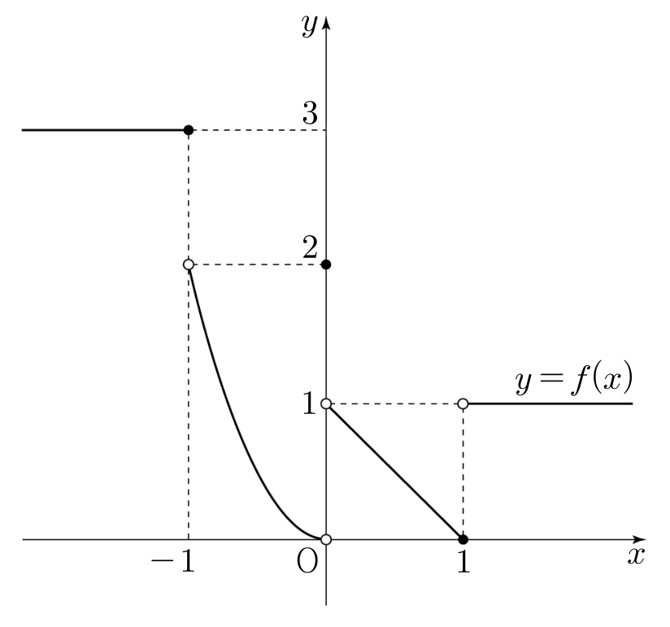
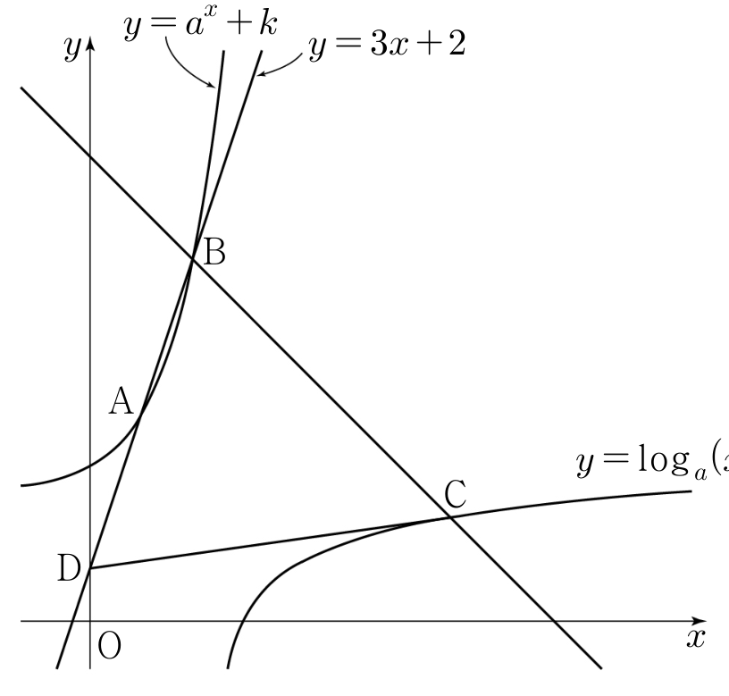
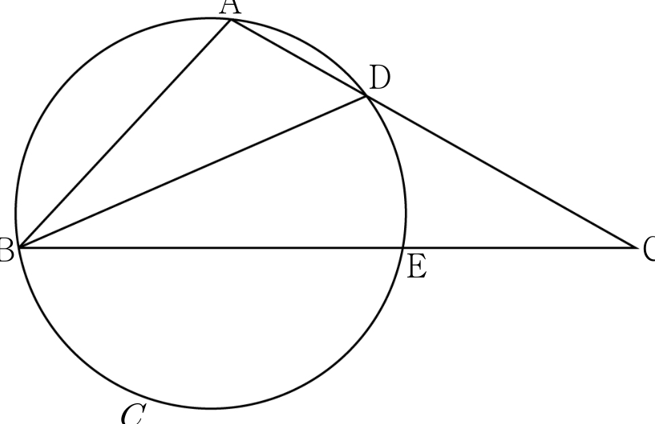

원본 풀이 (내부용)[출제의도] 삼각함수의 그래프 이해하기
함수 \(y=\cos\frac{\pi}{4}x\)의 주기는
\(
\frac{2\pi}{\left|\frac{\pi}{4}\right|}=8
\)
생성기 숫자판 1/6 · G2M9-07#0함수 $y=\tan\frac{\pi}{3}x$의 주기로 옳은 것을 고르세요.
① $3$② $5$③ $7$④ $9$⑤ $11$
정답① $3$ 함수 $y=\tan\frac{\pi}{3}x$의 주기는 $\frac{\pi}{\frac{\pi}{3}}=3$
숫자: 원본 4 → 쌍둥이 3
생성기 숫자판 2/6 · G2M9-07#0함수 $y=\cos\frac{\pi}{2}x$의 주기로 옳은 것을 고르세요.
① $2$② $4$③ $6$④ $8$⑤ $10$
정답② $4$ 함수 $y=\cos\frac{\pi}{2}x$의 주기는 $\frac{2\pi}{\frac{\pi}{2}}=4$
숫자: 원본 4 → 쌍둥이 2
생성기 숫자판 3/6 · G2M9-07#0함수 $y=\tan\frac{\pi}{6}x$의 주기로 옳은 것을 고르세요.
① $2$② $4$③ $6$④ $8$⑤ $10$
정답③ $6$ 함수 $y=\tan\frac{\pi}{6}x$의 주기는 $\frac{\pi}{\frac{\pi}{6}}=6$
숫자: 원본 4 → 쌍둥이 6
생성기 숫자판 4/6 · G2M9-07#0함수 $y=\cos\frac{\pi}{5}x$의 주기로 옳은 것을 고르세요.
① $4$② $6$③ $8$④ $10$⑤ $12$
정답④ $10$ 함수 $y=\cos\frac{\pi}{5}x$의 주기는 $\frac{2\pi}{\frac{\pi}{5}}=10$
숫자: 원본 4 → 쌍둥이 5
생성기 숫자판 5/6 · G2M9-07#0함수 $y=\tan\frac{\pi}{5}x$의 주기로 옳은 것을 고르세요.
① $1$② $3$③ $5$④ $7$⑤ $9$
정답③ $5$ 함수 $y=\tan\frac{\pi}{5}x$의 주기는 $\frac{\pi}{\frac{\pi}{5}}=5$
숫자: 원본 4 → 쌍둥이 5
생성기 숫자판 6/6 · G2M9-07#0함수 $y=\cos\frac{\pi}{6}x$의 주기로 옳은 것을 고르세요.
① $10$② $12$③ $14$④ $16$⑤ $18$
정답② $12$ 함수 $y=\cos\frac{\pi}{6}x$의 주기는 $\frac{2\pi}{\frac{\pi}{6}}=12$
숫자: 원본 4 → 쌍둥이 6
4. 2024년 10월 4번 · 3점 · 수학Ⅱ 함수의 극한·연속 · G2f-08#0
원본 (내부용)함수 \(y=f(x)\)의 그래프가 그림과 같다. 그림: \(x=-1\)에서 \(y=3\)인 닫힌 점과 \(y=2\)인 열린 점이 있다. \(x=0\)에서는 \(y=2\)인 닫힌 점, \(y=1\)인 열린 점, \(y=0\)인 열린 점이 표시되어 있다. \(x=-1\)부터 \(0\)까지 \(y=2\)의 열린 점에서 원점의 열린 점으로 내려가는 곡선이 있고, \(x=0\)의 \(y=1\) 열린 점부터 \(x=1\)의 \(y=0\) 닫힌 점까지 선분이 있다. \(x=1\)에서 \(y=1\)은 열린 점이며, 그 점에서 오른쪽으로 \(y=1\)인 수평선이 이어진다. \(x=-1\)의 \(y=3\) 닫힌 점에서 왼쪽으로 \(y=3\)인 수평선이 이어진다. 축에는 \(x=-1,0,1\), \(y=1,2,3\)이 표시되어 있다. \( \lim_{x\to-1-}f(x)+\lim_{x\to0+}f(x) \) 의 값은? [3점]

① 1② 2③ 3④ 4⑤ 5
원본 정답 ④
원본 풀이 (내부용)[출제의도] 함수의 극한 이해하기
\(
\lim_{x\to-1-}f(x)+\lim_{x\to0+}f(x)=3+1=4
\)
생성기 숫자판 1/6 · G2f-08#0함수 $y=f\left(x\right)$의 그래프가 그림과 같고, 두 경계의 $x$좌표가 $-3$, $0$이며 각 경계의 좌우 극한값이 $(4,2)$, $(0,1)$이고 채워진 두 점의 함수값이 $4$, $2$일 때, $\lim_{x\to -3^{+}}f\left(x\right)-\lim_{x\to 0^{+}}f\left(x\right)$의 값으로 옮은 것을 고르세요.
① $-1$② $0$③ $1$④ $2$⑤ $3$
정답③ $1$ $x\to -3^{+}$일 때 $f\left(x\right)\to 2$ $x\to 0^{+}$일 때 $f\left(x\right)\to 1$ 따라서 구하는 값은 $2-1=1$
생성기 숫자판 2/6 · G2f-08#0함수 $y=f\left(x\right)$의 그래프가 그림과 같고, 두 경계의 $x$좌표가 $-1$, $0$이며 각 경계의 좌우 극한값이 $(4,3)$, $(0,1)$이고 채워진 두 점의 함수값이 $4$, $3$일 때, $\lim_{x\to -1^{-}}f\left(x\right)+\lim_{x\to 0^{+}}f\left(x\right)$의 값으로 옮은 것을 고르세요.
① $3$② $4$③ $5$④ $6$⑤ $7$
정답③ $5$ $x\to -1^{-}$일 때 $f\left(x\right)\to 4$ $x\to 0^{+}$일 때 $f\left(x\right)\to 1$ 따라서 구하는 값은 $4+1=5$
생성기 숫자판 3/6 · G2f-08#0함수 $y=f\left(x\right)$의 그래프가 그림과 같고, 두 경계의 $x$좌표가 $-2$, $0$이며 각 경계의 좌우 극한값이 $(4,3)$, $(0,2)$이고 채워진 두 점의 함수값이 $4$, $3$일 때, $\lim_{x\to -2^{+}}f\left(x\right)-\lim_{x\to 0^{-}}f\left(x\right)$의 값으로 옮은 것을 고르세요.
① $1$② $2$③ $3$④ $4$⑤ $5$
정답③ $3$ $x\to -2^{+}$일 때 $f\left(x\right)\to 3$ $x\to 0^{-}$일 때 $f\left(x\right)\to 0$ 따라서 구하는 값은 $3-0=3$
생성기 숫자판 4/6 · G2f-08#0함수 $y=f\left(x\right)$의 그래프가 그림과 같고, 두 경계의 $x$좌표가 $-3$, $0$이며 각 경계의 좌우 극한값이 $(4,3)$, $(0,1)$이고 채워진 두 점의 함수값이 $4$, $3$일 때, $\lim_{x\to -3^{-}}f\left(x\right)+\lim_{x\to 0^{+}}f\left(x\right)$의 값으로 옮은 것을 고르세요.
① $3$② $4$③ $5$④ $6$⑤ $7$
정답③ $5$ $x\to -3^{-}$일 때 $f\left(x\right)\to 4$ $x\to 0^{+}$일 때 $f\left(x\right)\to 1$ 따라서 구하는 값은 $4+1=5$
생성기 숫자판 5/6 · G2f-08#0함수 $y=f\left(x\right)$의 그래프가 그림과 같고, 두 경계의 $x$좌표가 $-1$, $0$이며 각 경계의 좌우 극한값이 $(4,3)$, $(0,2)$이고 채워진 두 점의 함수값이 $4$, $3$일 때, $\lim_{x\to -1^{-}}f\left(x\right)+\lim_{x\to 0^{-}}f\left(x\right)$의 값으로 옮은 것을 고르세요.
① $2$② $3$③ $4$④ $5$⑤ $6$
정답③ $4$ $x\to -1^{-}$일 때 $f\left(x\right)\to 4$ $x\to 0^{-}$일 때 $f\left(x\right)\to 0$ 따라서 구하는 값은 $4+0=4$
생성기 숫자판 6/6 · G2f-08#0함수 $y=f\left(x\right)$의 그래프가 그림과 같고, 두 경계의 $x$좌표가 $-2$, $0$이며 각 경계의 좌우 극한값이 $(3,2)$, $(0,1)$이고 채워진 두 점의 함수값이 $3$, $2$일 때, $\lim_{x\to -2^{+}}f\left(x\right)-\lim_{x\to 0^{+}}f\left(x\right)$의 값으로 옮은 것을 고르세요.
① $-1$② $0$③ $1$④ $2$⑤ $3$
정답③ $1$ $x\to -2^{+}$일 때 $f\left(x\right)\to 2$ $x\to 0^{+}$일 때 $f\left(x\right)\to 1$ 따라서 구하는 값은 $2-1=1$
원본 (내부용)함수 \(f(x)\)가 \(x>\frac12\)인 모든 실수 \(x\)에 대하여 \( \frac{3}{2x+1}<f(x)<\frac{3}{2x-1} \) 을 만족시킬 때, \( \lim_{x\to\infty}xf(x) \) 의 값은? [3점]
① \(\frac32\)② \(2\)③ \(\frac52\)④ \(3\)⑤ \(\frac72\)
원본 정답 ①
원본 풀이 (내부용)[출제의도] 함수의 극한의 성질 이해하기
\(x>\frac12\)인 모든 실수 \(x\)에 대하여
\(
\frac3{2x+1}<f(x)<\frac3{2x-1}
\)
이므로
\(
\frac{3x}{2x+1}<xf(x)<\frac{3x}{2x-1}
\)
이때
\(
\lim_{x\to\infty}\frac{3x}{2x+1}
=\lim_{x\to\infty}\frac{3x}{2x-1}
=\frac32
\)
이므로 함수의 극한의 대소 관계에 의하여
\(
\lim_{x\to\infty}xf(x)=\frac32
\)
생성기 숫자판 1/6 · G2M9-07#1함수 $f\left(x\right)$가 $x>\frac{1}{2}$인 모든 실수 $x$에 대하여 $\frac{6}{2x+1}<f\left(x\right)<\frac{6}{2x-1}$을 만족시킬 때, $\lim_{x\to\infty}xf\left(x\right)$의 값으로 옳은 것을 고르세요.
① $2$② $\frac{5}{2}$③ $3$④ $\frac{7}{2}$⑤ $4$
정답③ $3$ $x>\frac{1}{2}$일 때 각 변에 $x$를 곱하면 $\frac{6x}{2x+1}<xf\left(x\right)<\frac{6x}{2x-1}$ $\lim_{x\to\infty}\frac{6x}{2x+1}=3$, $\lim_{x\to\infty}\frac{6x}{2x-1}=3$ 따라서 $\lim_{x\to\infty}xf\left(x\right)=3$
생성기 숫자판 2/6 · G2M9-07#1함수 $f\left(x\right)$가 $x>\frac{2}{3}$인 모든 실수 $x$에 대하여 $\frac{7}{3x+2}<f\left(x\right)<\frac{7}{3x-2}$을 만족시킬 때, $\lim_{x\to\infty}xf\left(x\right)$의 값으로 옳은 것을 고르세요.
① $\frac{11}{6}$② $\frac{7}{3}$③ $\frac{17}{6}$④ $\frac{10}{3}$⑤ $\frac{23}{6}$
정답② $\frac{7}{3}$ $x>\frac{2}{3}$일 때 각 변에 $x$를 곱하면 $\frac{7x}{3x+2}<xf\left(x\right)<\frac{7x}{3x-2}$ $\lim_{x\to\infty}\frac{7x}{3x+2}=\frac{7}{3}$, $\lim_{x\to\infty}\frac{7x}{3x-2}=\frac{7}{3}$ 따라서 $\lim_{x\to\infty}xf\left(x\right)=\frac{7}{3}$
생성기 숫자판 3/6 · G2M9-07#1함수 $f\left(x\right)$가 $x>\frac{1}{3}$인 모든 실수 $x$에 대하여 $\frac{2}{3x+1}<f\left(x\right)<\frac{2}{3x-1}$를 만족시킬 때, $\lim_{x\to\infty}xf\left(x\right)$의 값으로 옳은 것을 고르세요.
① $\frac{1}{6}$② $\frac{2}{3}$③ $\frac{7}{6}$④ $\frac{5}{3}$⑤ $\frac{13}{6}$
정답② $\frac{2}{3}$ $x>\frac{1}{3}$일 때 각 변에 $x$를 곱하면 $\frac{2x}{3x+1}<xf\left(x\right)<\frac{2x}{3x-1}$ $\lim_{x\to\infty}\frac{2x}{3x+1}=\frac{2}{3}$, $\lim_{x\to\infty}\frac{2x}{3x-1}=\frac{2}{3}$ 따라서 $\lim_{x\to\infty}xf\left(x\right)=\frac{2}{3}$
생성기 숫자판 4/6 · G2M9-07#1함수 $f\left(x\right)$가 $x>\frac{1}{4}$인 모든 실수 $x$에 대하여 $\frac{8}{4x+1}<f\left(x\right)<\frac{8}{4x-1}$을 만족시킬 때, $\lim_{x\to\infty}xf\left(x\right)$의 값으로 옳은 것을 고르세요.
① $\frac{1}{2}$② $1$③ $\frac{3}{2}$④ $2$⑤ $\frac{5}{2}$
정답④ $2$ $x>\frac{1}{4}$일 때 각 변에 $x$를 곱하면 $\frac{8x}{4x+1}<xf\left(x\right)<\frac{8x}{4x-1}$ $\lim_{x\to\infty}\frac{8x}{4x+1}=2$, $\lim_{x\to\infty}\frac{8x}{4x-1}=2$ 따라서 $\lim_{x\to\infty}xf\left(x\right)=2$
생성기 숫자판 5/6 · G2M9-07#1함수 $f\left(x\right)$가 $x>\frac{3}{4}$인 모든 실수 $x$에 대하여 $\frac{7}{4x+3}<f\left(x\right)<\frac{7}{4x-3}$을 만족시킬 때, $\lim_{x\to\infty}xf\left(x\right)$의 값으로 옳은 것을 고르세요.
① $\frac{7}{4}$② $\frac{9}{4}$③ $\frac{11}{4}$④ $\frac{13}{4}$⑤ $\frac{15}{4}$
정답① $\frac{7}{4}$ $x>\frac{3}{4}$일 때 각 변에 $x$를 곱하면 $\frac{7x}{4x+3}<xf\left(x\right)<\frac{7x}{4x-3}$ $\lim_{x\to\infty}\frac{7x}{4x+3}=\frac{7}{4}$, $\lim_{x\to\infty}\frac{7x}{4x-3}=\frac{7}{4}$ 따라서 $\lim_{x\to\infty}xf\left(x\right)=\frac{7}{4}$
생성기 숫자판 6/6 · G2M9-07#1함수 $f\left(x\right)$가 $x>\frac{1}{4}$인 모든 실수 $x$에 대하여 $\frac{5}{4x+1}<f\left(x\right)<\frac{5}{4x-1}$를 만족시킬 때, $\lim_{x\to\infty}xf\left(x\right)$의 값으로 옳은 것을 고르세요.
① $\frac{5}{4}$② $\frac{7}{4}$③ $\frac{9}{4}$④ $\frac{11}{4}$⑤ $\frac{13}{4}$
정답① $\frac{5}{4}$ $x>\frac{1}{4}$일 때 각 변에 $x$를 곱하면 $\frac{5x}{4x+1}<xf\left(x\right)<\frac{5x}{4x-1}$ $\lim_{x\to\infty}\frac{5x}{4x+1}=\frac{5}{4}$, $\lim_{x\to\infty}\frac{5x}{4x-1}=\frac{5}{4}$ 따라서 $\lim_{x\to\infty}xf\left(x\right)=\frac{5}{4}$
원본 (내부용)수열 \(\{a_n\}\)의 첫째항부터 제 \(n\)항까지의 합을 \(S_n\)이라 하자. \( S_n=\frac{1}{n+1} \) 일 때, \(a_1+a_5\)의 값은? [3점]
① \(\frac15\)② \(\frac4{15}\)③ \(\frac13\)④ \(\frac25\)⑤ \(\frac7{15}\)
원본 정답 ⑤
원본 풀이 (내부용)[출제의도] 수열의 합과 일반항 사이의 관계 이해하기
\(
a_1=S_1=\frac12
\)
\(
a_5=S_5-S_4=\frac16-\frac15=-\frac1{30}
\)
따라서
\(
a_1+a_5=\frac12+\left(-\frac1{30}\right)=\frac7{15}
\)
생성기 숫자판 1/6 · G2M9-07#4수열 $\left\{a_{n}\right\}$의 첫째항부터 제$n$항까지의 합을 $S_{n}$이라 합시다. $S_{n}=\frac{2}{n+1}$일 때, $a_{1}+a_{5}$의 값으로 옳은 것을 고르세요.
① $\frac{14}{15}$② $1$③ $\frac{16}{15}$④ $\frac{17}{15}$⑤ $\frac{6}{5}$
정답① $\frac{14}{15}$ $a_{1}=S_{1}=1$ $a_{5}=S_{5}-S_{4}=\frac{1}{3}-\frac{2}{5}=-\frac{1}{15}$ 따라서 $a_{1}+a_{5}=1-\frac{1}{15}=\frac{14}{15}$
숫자: 원본 1 1 1 5 → 쌍둥이 2 1 1 5 · 같은 수: 1 5
생성기 숫자판 2/6 · G2M9-07#4수열 $\left\{a_{n}\right\}$의 첫째항부터 제$n$항까지의 합을 $S_{n}$이라 합시다. $S_{n}=\frac{2}{n+2}$일 때, $a_{1}+a_{4}$의 값으로 옳은 것을 고르세요.
① $\frac{2}{5}$② $\frac{3}{5}$③ $\frac{4}{5}$④ $1$⑤ $\frac{6}{5}$
정답② $\frac{3}{5}$ $a_{1}=S_{1}=\frac{2}{3}$ $a_{4}=S_{4}-S_{3}=\frac{1}{3}-\frac{2}{5}=-\frac{1}{15}$ 따라서 $a_{1}+a_{4}=\frac{2}{3}-\frac{1}{15}=\frac{3}{5}$
숫자: 원본 1 1 1 5 → 쌍둥이 2 2 1 4 · 같은 수: 1
생성기 숫자판 3/6 · G2M9-07#4수열 $\left\{a_{n}\right\}$의 첫째항부터 제$n$항까지의 합을 $S_{n}$이라 합시다. $S_{n}=\frac{3}{n+2}$일 때, $a_{1}+a_{5}$의 값으로 옳은 것을 고르세요.
① $\frac{13}{14}$② $1$③ $\frac{15}{14}$④ $\frac{8}{7}$⑤ $\frac{17}{14}$
정답① $\frac{13}{14}$ $a_{1}=S_{1}=1$ $a_{5}=S_{5}-S_{4}=\frac{3}{7}-\frac{1}{2}=-\frac{1}{14}$ 따라서 $a_{1}+a_{5}=1-\frac{1}{14}=\frac{13}{14}$
숫자: 원본 1 1 1 5 → 쌍둥이 3 2 1 5 · 같은 수: 1 5
생성기 숫자판 4/6 · G2M9-07#4수열 $\left\{a_{n}\right\}$의 첫째항부터 제$n$항까지의 합을 $S_{n}$이라 합시다. $S_{n}=\frac{2}{n+1}$일 때, $a_{1}+a_{6}$의 값으로 옳은 것을 고르세요.
① $\frac{17}{21}$② $\frac{6}{7}$③ $\frac{19}{21}$④ $\frac{20}{21}$⑤ $1$
정답④ $\frac{20}{21}$ $a_{1}=S_{1}=1$ $a_{6}=S_{6}-S_{5}=\frac{2}{7}-\frac{1}{3}=-\frac{1}{21}$ 따라서 $a_{1}+a_{6}=1-\frac{1}{21}=\frac{20}{21}$
숫자: 원본 1 1 1 5 → 쌍둥이 2 1 1 6 · 같은 수: 1
생성기 숫자판 5/6 · G2M9-07#4수열 $\left\{a_{n}\right\}$의 첫째항부터 제$n$항까지의 합을 $S_{n}$이라 합시다. $S_{n}=\frac{3}{n+2}$일 때, $a_{1}+a_{4}$의 값으로 옳은 것을 고르세요.
① $\frac{4}{5}$② $\frac{9}{10}$③ $1$④ $\frac{11}{10}$⑤ $\frac{6}{5}$
정답② $\frac{9}{10}$ $a_{1}=S_{1}=1$ $a_{4}=S_{4}-S_{3}=\frac{1}{2}-\frac{3}{5}=-\frac{1}{10}$ 따라서 $a_{1}+a_{4}=1-\frac{1}{10}=\frac{9}{10}$
숫자: 원본 1 1 1 5 → 쌍둥이 3 2 1 4 · 같은 수: 1
생성기 숫자판 6/6 · G2M9-07#4수열 $\left\{a_{n}\right\}$의 첫째항부터 제$n$항까지의 합을 $S_{n}$이라 합시다. $S_{n}=\frac{3}{n+2}$일 때, $a_{1}+a_{3}$의 값으로 옳은 것을 고르세요.
① $\frac{3}{4}$② $\frac{4}{5}$③ $\frac{17}{20}$④ $\frac{9}{10}$⑤ $\frac{19}{20}$
정답③ $\frac{17}{20}$ $a_{1}=S_{1}=1$ $a_{3}=S_{3}-S_{2}=\frac{3}{5}-\frac{3}{4}=-\frac{3}{20}$ 따라서 $a_{1}+a_{3}=1-\frac{3}{20}=\frac{17}{20}$
숫자: 원본 1 1 1 5 → 쌍둥이 3 2 1 3 · 같은 수: 1
9. 2024년 10월 9번 · 3점 · 수학Ⅰ 지수·로그 · G2M9-07#5
원본 (내부용)\(0<a<5\)인 실수 \(a\)에 대하여 함수 \( f(x)=\log_2(x+a)+1 \) 은 닫힌구간 \([a,5]\)에서 최솟값 3을 갖는다. \(f(a+4)\)의 값은? [3점]
① 4② \(2+\log_2 5\)③ \(3+\log_2 3\)④ \(2+\log_2 7\)⑤ 5
원본 정답 ①
원본 풀이 (내부용)[출제의도] 로그함수의 그래프 이해하기
함수 \(f(x)=\log_2(x+a)+1\)의 밑이 1보다 크므로 \(x\)의 값이 증가하면 \(f(x)\)의 값도 증가한다. 그러므로 함수 \(f(x)\)는 닫힌구간 \([a,5]\)에서 \(x=a\)일 때 최솟값 3을 갖는다.
\(
f(a)=\log_2 2a+1=3
\)
에서 \(a=2\).
따라서
\(
f(a+4)=f(6)=\log_2 8+1=3+1=4
\)
생성기 숫자판 1/6 · G2M9-07#5$0<a<7$인 실수 $a$에 대하여 함수 $f\left(x\right)=\log_{2}\left(x+a\right)+3$은 닫힌구간 $\left[a,\ 7\right]$에서 최솟값 $6$을 갖습니다. $f\left(a+8\right)$의 값으로 옳은 것을 고르세요.
① $7$② $8$③ $9$④ $10$⑤ $11$
정답① $7$ 밑 $2$가 $1$보다 크므로 함수 $f\left(x\right)$는 $x=a$일 때 최솟값 $\log_{2}\left(2a\right)+3$을 가집니다. $\log_{2}\left(2a\right)+3=6$에서 $\log_{2}\left(2a\right)=3$, $2a=8$, $a=4$ $f\left(a+8\right)=f\left(12\right)=\log_{2}16+3=7$
원본 (내부용)수열 \(\{a_n\}\)이 모든 자연수 \(n\)에 대하여 \( a_{2n}=\sum_{k=1}^{2n-1}(k-a_k) \) 를 만족시킬 때, \( \sum_{k=1}^{10}a_k \) 의 값은? [3점]
① 45② 48③ 51④ 54⑤ 57
원본 정답 ①
원본 풀이 (내부용)[출제의도] 수열의 합을 활용하여 문제해결하기
\(
a_{2n}=\sum_{k=1}^{2n-1}(k-a_k)
=\sum_{k=1}^{2n-1}k-\sum_{k=1}^{2n-1}a_k
\)
\(
a_{2n}+\sum_{k=1}^{2n-1}a_k
=\sum_{k=1}^{2n-1}k
\)
에서
\(
\sum_{k=1}^{2n}a_k=\sum_{k=1}^{2n-1}k
\)
따라서
\(
\sum_{k=1}^{10}a_k=\sum_{k=1}^{9}k=\frac{9\times10}{2}=45
\)
생성기 숫자판 1/6 · G2M9-07#8수열 $\left\{a_{n}\right\}$이 모든 자연수 $n$에 대하여 $a_{2n}=\sum_{k=1}^{2n-1}\left(2k-a_{k}\right)$를 만족시킬 때, $\sum_{k=1}^{12}a_{k}$의 값으로 옳은 것을 고르세요.
생성기 숫자판 2/6 · G2M9-07#8수열 $\left\{a_{n}\right\}$이 모든 자연수 $n$에 대하여 $a_{2n}=\sum_{k=1}^{2n-1}\left(2k-a_{k}\right)$를 만족시킬 때, $\sum_{k=1}^{8}a_{k}$의 값으로 옳은 것을 고르세요.
생성기 숫자판 3/6 · G2M9-07#8수열 $\left\{a_{n}\right\}$이 모든 자연수 $n$에 대하여 $a_{2n}=\sum_{k=1}^{2n-1}\left(k-a_{k}\right)$를 만족시킬 때, $\sum_{k=1}^{8}a_{k}$의 값으로 옳은 것을 고르세요.
생성기 숫자판 4/6 · G2M9-07#8수열 $\left\{a_{n}\right\}$이 모든 자연수 $n$에 대하여 $a_{2n}=\sum_{k=1}^{2n-1}\left(2k-a_{k}\right)$를 만족시킬 때, $\sum_{k=1}^{10}a_{k}$의 값으로 옳은 것을 고르세요.
생성기 숫자판 5/6 · G2M9-07#8수열 $\left\{a_{n}\right\}$이 모든 자연수 $n$에 대하여 $a_{2n}=\sum_{k=1}^{2n-1}\left(k-a_{k}\right)$를 만족시킬 때, $\sum_{k=1}^{14}a_{k}$의 값으로 옳은 것을 고르세요.
생성기 숫자판 6/6 · G2M9-07#8수열 $\left\{a_{n}\right\}$이 모든 자연수 $n$에 대하여 $a_{2n}=\sum_{k=1}^{2n-1}\left(3k-a_{k}\right)$를 만족시킬 때, $\sum_{k=1}^{14}a_{k}$의 값으로 옳은 것을 고르세요.
원본 (내부용)좌표평면에서 직선 \(y=x+1\) 위의 \(x\)좌표가 양수인 점 \(P\)에 대하여 동경 \(OP\)가 나타내는 각의 크기를 \(\theta\) \((0<\theta<2\pi)\)라 하자. 각의 크기 \(\theta\)를 나타내는 동경과 각의 크기 \(7\theta\)를 나타내는 동경이 일치할 때, 점 \(P\)의 \(x\)좌표는? (단, \(O\)는 원점이고, \(x\)축의 양의 방향을 시초선으로 한다.) [3점]
① \(\frac{\sqrt3-1}{2}\)② \(\frac{2\sqrt3-1}{4}\)③ \(\frac{\sqrt3}{2}\)④ \(\frac{2\sqrt3+1}{4}\)⑤ \(\frac{\sqrt3+1}{2}\)
원본 정답 ⑤
원본 풀이 (내부용)[출제의도] 삼각함수의 정의 이해하기
점 \(P\)의 \(x\)좌표를 \(a\,(a>0)\)이라 하면 점 \(P\)의 좌표는 \(P(a,a+1)\).
각의 크기 \(\theta\)를 나타내는 동경과 각의 크기 \(7\theta\)를 나타내는 동경이 일치하므로
\(
7\theta=\theta+2n\pi\quad(n\text{은 정수}),\qquad
\theta=\frac n3\pi
\)
점 \(P\)는 제1사분면 위의 점이고 \(0<\theta<2\pi\)이므로 \(n=1,\ \theta=\frac\pi3\).
\(
\tan\frac\pi3=\frac{a+1}{a}
\)
에서
\(
\sqrt3a=a+1,\qquad(\sqrt3-1)a=1
\)
따라서
\(
a=\frac1{\sqrt3-1}=\frac{\sqrt3+1}{2}
\)
생성기 숫자판 1/6 · G2M9-08#0좌표평면에서 직선 $y=x+3$ 위의 $x$좌표가 양수인 점 $\mathrm{P}$에 대하여 동경 $\mathrm{OP}$가 나타내는 각의 크기를 $\theta\ \left(0<\theta<2\pi\right)$라 합시다. 각의 크기 $\theta$를 나타내는 동경과 각의 크기 $13\theta$를 나타내는 동경이 일치할 때, 점 $\mathrm{P}$의 $x$좌표로 옳은 것을 고르세요. (단, $\mathrm{O}$는 원점이고, $x$축의 양의 방향을 시초선으로 합니다.)
① $\frac{3\sqrt{3}-3}{2}$② $\frac{6\sqrt{3}-3}{4}$③ $\frac{3\sqrt{3}}{2}$④ $\frac{6\sqrt{3}+3}{4}$⑤ $\frac{3\sqrt{3}+3}{2}$
정답⑤ $\frac{3\sqrt{3}+3}{2}$ 두 동경이 일치하므로 $13\theta-\theta=2n\pi$ ($n$은 정수), $\theta=\frac{n\pi}{6}$ 점 $\mathrm{P}$는 직선 $y=x+3$ 위의 $x$좌표가 양수인 점이므로 $\frac{\pi}{4}<\theta<\frac{\pi}{2}$, 곧 $\theta=\frac{\pi}{3}$ 점 $\mathrm{P}$의 $x$좌표를 $t$라 하면 $\tan\frac{\pi}{3}=\frac{t+3}{t}=\sqrt{3}$ $t=\frac{3}{\sqrt{3}-1}=\frac{3\sqrt{3}+3}{2}$
숫자: 원본 1 0 2 7 → 쌍둥이 3 0 2 13 · 같은 수: 0 2
생성기 숫자판 2/6 · G2M9-08#0좌표평면에서 직선 $y=x+4$ 위의 $x$좌표가 양수인 점 $\mathrm{P}$에 대하여 동경 $\mathrm{OP}$가 나타내는 각의 크기를 $\theta\ \left(0<\theta<2\pi\right)$라 합시다. 각의 크기 $\theta$를 나타내는 동경과 각의 크기 $7\theta$를 나타내는 동경이 일치할 때, 점 $\mathrm{P}$의 $x$좌표로 옳은 것을 고르세요. (단, $\mathrm{O}$는 원점이고, $x$축의 양의 방향을 시초선으로 합니다.)
① $2\sqrt{3}-2$② $2\sqrt{3}-1$③ $2\sqrt{3}$④ $2\sqrt{3}+1$⑤ $2\sqrt{3}+2$
정답⑤ $2\sqrt{3}+2$ 두 동경이 일치하므로 $7\theta-\theta=2n\pi$ ($n$은 정수), $\theta=\frac{n\pi}{3}$ 점 $\mathrm{P}$는 직선 $y=x+4$ 위의 $x$좌표가 양수인 점이므로 $\frac{\pi}{4}<\theta<\frac{\pi}{2}$, 곧 $\theta=\frac{\pi}{3}$ 점 $\mathrm{P}$의 $x$좌표를 $t$라 하면 $\tan\frac{\pi}{3}=\frac{t+4}{t}=\sqrt{3}$ $t=\frac{4}{\sqrt{3}-1}=2\sqrt{3}+2$
숫자: 원본 1 0 2 7 → 쌍둥이 4 0 2 7 · 같은 수: 0 2 7
생성기 숫자판 3/6 · G2M9-08#0좌표평면에서 직선 $y=x+2$ 위의 $x$좌표가 양수인 점 $\mathrm{P}$에 대하여 동경 $\mathrm{OP}$가 나타내는 각의 크기를 $\theta\ \left(0<\theta<2\pi\right)$라 합시다. 각의 크기 $\theta$를 나타내는 동경과 각의 크기 $7\theta$를 나타내는 동경이 일치할 때, 점 $\mathrm{P}$의 $x$좌표로 옳은 것을 고르세요. (단, $\mathrm{O}$는 원점이고, $x$축의 양의 방향을 시초선으로 합니다.)
① $\sqrt{3}-1$② $\frac{2\sqrt{3}-1}{2}$③ $\sqrt{3}$④ $\frac{2\sqrt{3}+1}{2}$⑤ $\sqrt{3}+1$
정답⑤ $\sqrt{3}+1$ 두 동경이 일치하므로 $7\theta-\theta=2n\pi$ ($n$은 정수), $\theta=\frac{n\pi}{3}$ 점 $\mathrm{P}$는 직선 $y=x+2$ 위의 $x$좌표가 양수인 점이므로 $\frac{\pi}{4}<\theta<\frac{\pi}{2}$, 곧 $\theta=\frac{\pi}{3}$ 점 $\mathrm{P}$의 $x$좌표를 $t$라 하면 $\tan\frac{\pi}{3}=\frac{t+2}{t}=\sqrt{3}$ $t=\frac{2}{\sqrt{3}-1}=\sqrt{3}+1$
숫자: 원본 1 0 2 7 → 쌍둥이 2 0 2 7 · 같은 수: 0 2 7
생성기 숫자판 4/6 · G2M9-08#0좌표평면에서 직선 $y=x+4$ 위의 $x$좌표가 양수인 점 $\mathrm{P}$에 대하여 동경 $\mathrm{OP}$가 나타내는 각의 크기를 $\theta\ \left(0<\theta<2\pi\right)$라 합시다. 각의 크기 $\theta$를 나타내는 동경과 각의 크기 $13\theta$를 나타내는 동경이 일치할 때, 점 $\mathrm{P}$의 $x$좌표로 옳은 것을 고르세요. (단, $\mathrm{O}$는 원점이고, $x$축의 양의 방향을 시초선으로 합니다.)
① $2\sqrt{3}-2$② $2\sqrt{3}-1$③ $2\sqrt{3}$④ $2\sqrt{3}+1$⑤ $2\sqrt{3}+2$
정답⑤ $2\sqrt{3}+2$ 두 동경이 일치하므로 $13\theta-\theta=2n\pi$ ($n$은 정수), $\theta=\frac{n\pi}{6}$ 점 $\mathrm{P}$는 직선 $y=x+4$ 위의 $x$좌표가 양수인 점이므로 $\frac{\pi}{4}<\theta<\frac{\pi}{2}$, 곧 $\theta=\frac{\pi}{3}$ 점 $\mathrm{P}$의 $x$좌표를 $t$라 하면 $\tan\frac{\pi}{3}=\frac{t+4}{t}=\sqrt{3}$ $t=\frac{4}{\sqrt{3}-1}=2\sqrt{3}+2$
숫자: 원본 1 0 2 7 → 쌍둥이 4 0 2 13 · 같은 수: 0 2
생성기 숫자판 5/6 · G2M9-08#0좌표평면에서 직선 $y=x+3$ 위의 $x$좌표가 양수인 점 $\mathrm{P}$에 대하여 동경 $\mathrm{OP}$가 나타내는 각의 크기를 $\theta\ \left(0<\theta<2\pi\right)$라 합시다. 각의 크기 $\theta$를 나타내는 동경과 각의 크기 $7\theta$를 나타내는 동경이 일치할 때, 점 $\mathrm{P}$의 $x$좌표로 옳은 것을 고르세요. (단, $\mathrm{O}$는 원점이고, $x$축의 양의 방향을 시초선으로 합니다.)
① $\frac{3\sqrt{3}-3}{2}$② $\frac{6\sqrt{3}-3}{4}$③ $\frac{3\sqrt{3}}{2}$④ $\frac{6\sqrt{3}+3}{4}$⑤ $\frac{3\sqrt{3}+3}{2}$
정답⑤ $\frac{3\sqrt{3}+3}{2}$ 두 동경이 일치하므로 $7\theta-\theta=2n\pi$ ($n$은 정수), $\theta=\frac{n\pi}{3}$ 점 $\mathrm{P}$는 직선 $y=x+3$ 위의 $x$좌표가 양수인 점이므로 $\frac{\pi}{4}<\theta<\frac{\pi}{2}$, 곧 $\theta=\frac{\pi}{3}$ 점 $\mathrm{P}$의 $x$좌표를 $t$라 하면 $\tan\frac{\pi}{3}=\frac{t+3}{t}=\sqrt{3}$ $t=\frac{3}{\sqrt{3}-1}=\frac{3\sqrt{3}+3}{2}$
숫자: 원본 1 0 2 7 → 쌍둥이 3 0 2 7 · 같은 수: 0 2 7
생성기 숫자판 6/6 · G2M9-08#0좌표평면에서 직선 $y=x+1$ 위의 $x$좌표가 양수인 점 $\mathrm{P}$에 대하여 동경 $\mathrm{OP}$가 나타내는 각의 크기를 $\theta\ \left(0<\theta<2\pi\right)$라 합시다. 각의 크기 $\theta$를 나타내는 동경과 각의 크기 $7\theta$를 나타내는 동경이 일치할 때, 점 $\mathrm{P}$의 $x$좌표로 옳은 것을 고르세요. (단, $\mathrm{O}$는 원점이고, $x$축의 양의 방향을 시초선으로 합니다.)
① $\frac{\sqrt{3}-1}{2}$② $\frac{2\sqrt{3}-1}{4}$③ $\frac{\sqrt{3}}{2}$④ $\frac{2\sqrt{3}+1}{4}$⑤ $\frac{\sqrt{3}+1}{2}$
정답⑤ $\frac{\sqrt{3}+1}{2}$ 두 동경이 일치하므로 $7\theta-\theta=2n\pi$ ($n$은 정수), $\theta=\frac{n\pi}{3}$ 점 $\mathrm{P}$는 직선 $y=x+1$ 위의 $x$좌표가 양수인 점이므로 $\frac{\pi}{4}<\theta<\frac{\pi}{2}$, 곧 $\theta=\frac{\pi}{3}$ 점 $\mathrm{P}$의 $x$좌표를 $t$라 하면 $\tan\frac{\pi}{3}=\frac{t+1}{t}=\sqrt{3}$ $t=\frac{1}{\sqrt{3}-1}=\frac{\sqrt{3}+1}{2}$
숫자: 원본 1 0 2 7 → 쌍둥이 1 0 2 7 · 같은 수: 0 1 2 7
14. 2024년 10월 14번 · 4점 · 수학Ⅱ 함수의 극한·연속 · 4점 쌍둥이
원본 (내부용)실수 전체의 집합에서 연속인 함수 \(f(x)\)가 다음 조건을 만족시킬 때, \(f(0)\)의 값은? [4점] (가) \(x\ge-\frac12\)인 모든 실수 \(x\)에 대하여 \( (\sqrt{2x+1}-1)\times f(x)=x^2+ax+b \) 이다. (단, \(a\)와 \(b\)는 상수이다.) (나) \(f(4)=2\)
① \(-7\)② \(-3\)③ 1④ 5⑤ 9
원본 정답 ②
원본 풀이 (내부용)[출제의도] 함수의 연속을 활용하여 문제해결하기
조건 (가)의 식의 양변에 \(x=0\)을 대입하면
\(
0\times f(0)=b
\)
에서 \(b=0\).
조건 (가)의 식의 양변에 \(x=4\)를 대입하면
\(
2f(4)=16+4a
\)
조건 (나)에 의하여 \(4=16+4a\)에서 \(a=-3\).
그러므로 \(x\ge-\frac12\)이고 \(x\ne0\)인 모든 실수 \(x\)에 대하여
\(
f(x)=\frac{x(x-3)}{\sqrt{2x+1}-1}
\)
함수 \(f(x)\)가 실수 전체의 집합에서 연속이므로 함수 \(f(x)\)는 \(x=0\)에서 연속이다.
\(
\begin{aligned}
f(0)&=\lim_{x\to0}f(x)\\
&=\lim_{x\to0}\frac{x(x-3)}{\sqrt{2x+1}-1}\\
&=\lim_{x\to0}\frac{x(x-3)(\sqrt{2x+1}+1)}
{(\sqrt{2x+1}-1)(\sqrt{2x+1}+1)}\\
&=\lim_{x\to0}\frac{x(x-3)(\sqrt{2x+1}+1)}{2x}\\
&=\lim_{x\to0}\frac{(x-3)(\sqrt{2x+1}+1)}2\\
&=\frac{-3\times2}{2}=-3
\end{aligned}
\)
쌍둥이 1/5 · 4점 쌍둥이실수 전체의 집합에서 연속인 함수 $f(x)$가 다음 조건을 만족시킬 때, $f(0)$의 값으로 옳은 것을 고르세요. (가) $x\ge-\frac{1}{3}$인 모든 실수 $x$에 대하여 $(\sqrt{3x+1}-1)\times f(x)=x^{2}+ax+b$입니다. (단, $a$와 $b$는 상수입니다.) (나) $f(5)=5$
① $-2$② $-\frac{5}{3}$③ $-\frac{4}{3}$④ $-1$⑤ $-\frac{2}{3}$
쌍둥이 2/5 · 4점 쌍둥이실수 전체의 집합에서 연속인 함수 $f(x)$가 다음 조건을 만족시킬 때, $f(0)$의 값으로 옳은 것을 고르세요. (가) $x\ge-\frac{1}{4}$인 모든 실수 $x$에 대하여 $(\sqrt{4x+1}-1)\times f(x)=x^{2}+ax+b$입니다. (단, $a$와 $b$는 상수입니다.) (나) $f(2)=-3$
① $-4$② $-\frac{7}{2}$③ $-3$④ $-\frac{5}{2}$⑤ $-2$
쌍둥이 3/5 · 4점 쌍둥이실수 전체의 집합에서 연속인 함수 $f(x)$가 다음 조건을 만족시킬 때, $f(0)$의 값으로 옳은 것을 고르세요. (가) $x\ge-\frac{1}{3}$인 모든 실수 $x$에 대하여 $(\sqrt{3x+1}-1)\times f(x)=x^{2}+ax+b$입니다. (단, $a$와 $b$는 상수입니다.) (나) $f(5)=0$
① $-4$② $-\frac{11}{3}$③ $-\frac{10}{3}$④ $-3$⑤ $-\frac{8}{3}$
정답③ $-\frac{10}{3}$ $x=0$을 넣으면 $b=0$이다. $x\ne0$일 때 유리화하여 $f(x)=\frac{(x+a)(\sqrt{3x+1}+1)}{3}$을 얻는다. $f(5)=\frac{5+a}{3}\times5=0$이므로 $a=-5$이다. 연속성으로 $f(0)=\lim_{x\to0}\frac{(x-5)(\sqrt{3x+1}+1)}{3}=-\frac{10}{3}$이다.
쌍둥이 4/5 · 4점 쌍둥이실수 전체에서 연속인 함수 $f(x)$가 $x\ge-1$일 때 $(\sqrt{x+1}-1)f(x)=x^2+ax+b$를 만족시키고 $f(3)=4$입니다. $f(1)$의 값을 구하세요. ($a,b$는 상수입니다.)
① $-\frac{2(\sqrt2+1)}3$② $-\frac{\sqrt2+1}3$③ $0$④ $\frac{\sqrt2+1}3$⑤ $\frac{2(\sqrt2+1)}3$
정답① $-\frac{2(\sqrt2+1)}3$ $x=0$에서 왼쪽 계수가 $0$이므로 연속성을 위해 $b=0$이어야 한다. 유리화하면 $f(x)=(x+a)(\sqrt{x+1}+1)$이다. $f(3)=4$에서 $3(3+a)=4$이므로 $a=-\frac53$이다. 따라서 $f(1)=(1-\frac53)(\sqrt2+1)=-\frac{2(\sqrt2+1)}3$이다.
쌍둥이 5/5 · 4점 쌍둥이실수 전체에서 연속인 함수 $f(x)$가 $x\ge-1$일 때 $(\sqrt{x+1}-1)f(x)=x^2+ax+b$를 만족시키고 $f(3)=9$입니다. $f(1)$의 값을 구하세요. ($a,b$는 상수입니다.)
① $\frac{\sqrt2+1}{2}$② $\sqrt2+1$③ $2$④ $2(\sqrt2+1)$⑤ $3$
정답② $\sqrt2+1$ $x=0$에서 계수가 0이므로 연속성을 위해 $b=0$이고, 유리화하면 $f(x)=(x+a)(\sqrt{x+1}+1)$이다. $f(3)=9$에서 $3(3+a)=9$이므로 $a=0$이다. 따라서 $f(1)=(1+0)(\sqrt2+1)=\sqrt2+1$이다.
숫자: 원본 0 12 2 1 1 4 2 → 쌍둥이 1 1 1 3 9 1 · 같은 수: 1
15. 2024년 10월 15번 · 4점 · 수학Ⅰ 수열 · 4점 쌍둥이
원본 (내부용)자연수 \(n\) \((n\ge2)\)에 대하여 \(\sin\frac{n}{5}\pi\)의 \(n\)제곱근 중 실수인 것의 개수를 \(f(n)\)이라 할 때, \( \sum_{n=2}^{10}f(n) \) 의 값은? [4점]
① 5② 6③ 7④ 8⑤ 9
원본 정답 ⑤
원본 풀이 (내부용)[출제의도] 거듭제곱근의 정의 이해하기
(i) \(n\)이 홀수일 때
\(
f(n)=1\text{이므로 } f(3)=f(5)=f(7)=f(9)=1
\)
(ii) \(n\)이 짝수일 때
\(n=2,4\)이면 \(\sin\frac{n\pi}{5}>0\)이므로 \(f(2)=f(4)=2\).
\(n=6,8\)이면 \(\sin\frac{n\pi}{5}<0\)이므로 \(f(6)=f(8)=0\).
\(n=10\)이면 \(\sin\frac{10}{5}\pi=0\)이므로 \(f(10)=1\).
(i), (ii)에 의하여
\(
\sum_{n=2}^{10}f(n)=1\times4+2\times2+1=9
\)
쌍둥이 1/5 · 4점 쌍둥이자연수 $n$ $(n\ge2)$에 대하여 $\sin\frac{n\pi}{7}$의 $n$제곱근 중 실수인 것의 개수를 $f(n)$이라 할 때, $\sum_{n=2}^{22}n f(n)$의 값을 구하세요.
① $188$② $194$③ $200$④ $206$⑤ $212$
정답③ $200$ $\sin(n\pi/7)$이 음수일 때 실수 $n$제곱근은 $n$이 홀수이면 하나, 짝수이면 없다. 양수일 때와 $0$일 때는 실수근이 하나이므로 제외되는 항은 짝수 $n$에서 사인값이 음수인 경우뿐이다. $2\le n\le22$에서 $n\pi/7$의 사인값이 음수인 짝수는 $8,10,12,22$이다. 전체 합 $2+3+\cdots+22=252$에서 제외 합 $8+10+12+22=52$를 빼면 $200$이다.
숫자: 원본 2 5 2 → 쌍둥이 2 7 2 · 같은 수: 2
쌍둥이 2/5 · 4점 쌍둥이자연수 $n$ $(n\ge2)$에 대하여 $\sin\frac{n}{3}\pi$의 $n$제곱근 중 실수인 것의 개수를 $f(n)$이라 할 때, $\sum_{n=2}^{8}f(n)$의 값으로 옳은 것을 고르세요.
① $8$② $9$③ $10$④ $11$⑤ $12$
정답① $8$ $n$이 홀수이면 $f(n)=1$이고, $n$이 짝수이면 $\sin\frac{n}{3}\pi$가 양수일 때 $2$, $0$일 때 $1$, 음수일 때 $0$입니다. $f(2)=2$, $f(3)=1$, $f(4)=0$, $f(5)=1$, $f(6)=1$, $f(7)=1$, $f(8)=2$ 합은 $2+1+0+1+1+1+2=8$
숫자: 원본 2 5 2 → 쌍둥이 2 3 2 · 같은 수: 2
쌍둥이 3/5 · 4점 쌍둥이자연수 $n$ $(n\ge2)$에 대하여 $\sin\frac{n}{4}\pi$의 $n$제곱근 중 실수인 것의 개수를 $f(n)$이라 할 때, $\sum_{n=2}^{12}f(n)$의 값으로 옳은 것을 고르세요.
① $11$② $12$③ $13$④ $14$⑤ $15$
정답② $12$ $n$이 홀수이면 $f(n)=1$이고, $n$이 짝수이면 $\sin\frac{n}{4}\pi$가 양수일 때 $2$, $0$일 때 $1$, 음수일 때 $0$입니다. $f(2)=2$, $f(3)=1$, $f(4)=1$, $f(5)=1$, $f(6)=0$, $f(7)=1$, $f(8)=1$, $f(9)=1$, $f(10)=2$, $f(11)=1$, $f(12)=1$ 합은 $2+1+1+1+0+1+1+1+2+1+1=12$
숫자: 원본 2 5 2 → 쌍둥이 2 4 2 · 같은 수: 2
쌍둥이 4/5 · 4점 쌍둥이자연수 $n$ $(n\ge2)$에 대하여 $\sin\frac{n}{6}\pi$의 $n$제곱근 중 실수인 것의 개수를 $f(n)$이라 할 때, $\sum_{n=2}^{10}f(n)$의 값으로 옳은 것을 고르세요.
① $7$② $8$③ $9$④ $10$⑤ $11$
정답③ $9$ $n$이 홀수이면 $f(n)=1$이고, $n$이 짝수이면 $\sin\frac{n}{6}\pi$가 양수일 때 $2$, $0$일 때 $1$, 음수일 때 $0$입니다. $f(2)=2$, $f(3)=1$, $f(4)=2$, $f(5)=1$, $f(6)=1$, $f(7)=1$, $f(8)=0$, $f(9)=1$, $f(10)=0$ 합은 $2+1+2+1+1+1+0+1+0=9$
숫자: 원본 2 5 2 → 쌍둥이 2 6 2 · 같은 수: 2
쌍둥이 5/5 · 4점 쌍둥이자연수 $n$ $(n\ge2)$에 대하여 $\sin\frac{n\pi}{5}$의 $n$제곱근 중 실수인 것의 개수를 $f(n)$이라 할 때, $\sum_{n=2}^{16}n f(n)$의 값을 구하세요.
① $95$② $100$③ $105$④ $110$⑤ $115$
정답③ $105$ 양수 또는 $0$의 실수는 양의 실수 $n$제곱근을 하나 갖고, 음수는 $n$이 홀수일 때만 실수근을 하나 갖는다. 따라서 $f(n)=0$인 경우는 $n$이 짝수이고 $\sin(n\pi/5)<0$일 때뿐이다. $2\le n\le16$에서 해당하는 짝수는 $6,8,16$이다. 전체 합 $2+3+\cdots+16=135$에서 이 수들을 빼면 된다. 따라서 $\sum_{n=2}^{16}n f(n)=135-(6+8+16)=105$이다.
숫자: 원본 2 5 2 → 쌍둥이 2 5 2 · 같은 수: 2 5
16. 2024년 10월 16번 · 4점 · 수학Ⅰ 지수·로그 · 4점 쌍둥이
원본 (내부용)1보다 크고 100보다 작은 두 자연수 \(m,n\)이 \( \log_n4\times\left(\frac{4}{\log_m2}+\log_2n\right)=8 \) 을 만족시킬 때, \(m+n\)의 최댓값은? [4점]
① 96② 100③ 104④ 108⑤ 112
원본 정답 ④
원본 풀이 (내부용)[출제의도] 로그의 성질을 활용하여 문제해결하기
\(
\begin{aligned}
\log_n\left(4\times\left(\frac4{\log_2m}+\log_2n\right)\right)
&=2\log_2n\times(4\log_2m+\log_2n)\\
&=8\log_2n\times\log_2m+2\log_2n\times\log_2n\\
&=8\log_nm+2=8
\end{aligned}
\)
\(
\log_nm=\frac34
\)
에서 \(m=n^{\frac34}\).
\(n^{\frac34}\)이 자연수가 되기 위해서는 어떤 자연수 \(k\)에 대하여 \(n=k^4\)이어야 한다. \(1<n<100\)이므로 \(n=2^4\) 또는 \(n=3^4\)이다.
\(n=2^4\)이면 \(m=(2^4)^{\frac34}=2^3=8\)이므로 \(m+n=8+16=24\).
\(n=3^4\)이면 \(m=(3^4)^{\frac34}=3^3=27\)이므로 \(m+n=27+81=108\).
따라서 \(m+n\)의 최댓값은 108.
---
## 원본 PDF 쪽 7
### 풀이 — 교사용/해설 자료
쌍둥이 1/5 · 4점 쌍둥이$1$보다 크고 $256$보다 작은 두 자연수 $m,n$이 $\log_n4\left(\frac{2}{\log_m2}+\log_2n\right)=3$을 만족시킬 때, $m+n$의 최댓값을 구하세요.
① $72$② $80$③ $84$④ $88$⑤ $96$
정답③ $84$ $x=\log_2m$, $y=\log_2n$라 두면 식은 $2+4x/y=3$이므로 $y=4x$이다. 따라서 $n=m^4$이다. $1<m,n<256$인 자연수해에서 $m=2,3$이고 쌍은 $(2,16),(3,81)$이다. $m+n$의 최댓값은 $3+81=84$이다.
원본 (내부용)\(a>\pi\)인 실수 \(a\)에 대하여 함수 \( f(x)=\cos^2x-\sin x-1 \) 이 구간 \((\pi,a]\)에서 최솟값을 갖도록 하는 \(a\)의 최솟값을 \(p\)라 하자. 구간 \((\pi,p]\)에서 함수 \(f(x)\)의 최댓값을 \(M\)이라 할 때, \( p\times M \) 의 값은? [4점]
① \(\frac38\pi\)② \(\frac\pi2\)③ \(\frac58\pi\)④ \(\frac34\pi\)⑤ \(\frac78\pi\)
원본 정답 ①
원본 풀이 (내부용)[출제의도] 삼각함수의 그래프를 이용하여 추론하기
\(
\begin{aligned}
f(x)&=\cos^2x-\sin x-1\\
&=(1-\sin^2x)-\sin x-1\\
&=-\sin^2x-\sin x\\
&=-\left(\sin x+\frac12\right)^2+\frac14
\end{aligned}
\)
\(f(\pi)=0\)이고 \(\pi\)가 구간 \((\pi,a]\)에 속하지 않으므로, 구간 \((\pi,a]\)에서 함수 \(f(x)\)가 최솟값을 갖기 위해서는 \(f(x)\le0\)을 만족시키는 \(x\)의 값이 구간 \((\pi,a]\)에 존재해야 한다.
\(
f(x)\le0\text{에서 }\sin x=-1\text{ 또는 }\sin x\ge0
\)
\(x>\pi\)에서 \(\sin x=-1\)인 \(x\)의 최솟값은 \(\frac32\pi\), \(\sin x\ge0\)인 \(x\)의 최솟값은 \(2\pi\).
그러므로
\(
p=\frac32\pi
\)
한편 구간 \((\pi,\frac32\pi]\)에서 \(-1\le\sin x<0\)이므로
\(
f(x)=-\left(\sin x+\frac12\right)^2+\frac14\le\frac14
\)
그러므로 \(M=\frac14\).
따라서
\(
p\times M=\frac38\pi
\)
쌍둥이 1/5 · 4점 쌍둥이$a>\pi$에 대하여 $f(x)=\cos^2x-\frac13\sin x-1$이라 합니다. 구간 $(\pi,a]$에서 $f$가 최솟값을 갖게 하는 $a$의 최솟값을 $p$라 하고, $M$을 구간 $(\pi,p]$에서 $f$의 최댓값이라 할 때, $M$의 값을 구하세요.
① $\frac1{72}$② $\frac1{48}$③ $\frac1{36}$④ $\frac1{24}$⑤ $\frac1{18}$
정답③ $\frac1{36}$ $s=\sin x$로 두면 $f(x)=-s(s+\frac13)$이다. $x$가 $\pi$에서 증가할 때 처음에는 $s$가 $0$에서 감소한다. $p=\pi+\arcsin(\frac13)$에서 $s=-\frac13$이고 $f(p)=0$이다. $(\pi,p)$에서는 $-\frac13<s<0$이므로 $f(x)>0$이며, 구간 끝점이 포함될 때 처음 최솟값 $0$을 얻는다. 따라서 이 구간에서 최댓값은 이차식 $-s(s+\frac13)$의 꼭짓점 $s=-\frac16$에서 얻는다. 꼭짓값은 $M=\frac1{36}$이다.
숫자: 원본 1 → 쌍둥이 13 1 · 같은 수: 1
쌍둥이 2/5 · 4점 쌍둥이$a>\pi$인 실수 $a$에 대하여 함수 $f(x)=\cos^{2}x-\frac{1}{2}\sin x-1$이 구간 $(\pi,\ a]$에서 최솟값을 갖도록 하는 $a$의 최솟값을 $p$라 합니다. 구간 $(\pi,\ p]$에서 함수 $f(x)$의 최댓값을 $M$이라 할 때, $p\times M$의 값으로 옳은 것을 고르세요.
정답$\frac{7\pi}{96}$ $\sin x=s$라 하면 $f(x)=1-s^{2}-\frac{1}{2}s-1=-s\left(s+\frac{1}{2}\right)$ $x$가 $\pi$에서 커지면 $s$는 $0$에서 줄어들고, $f(x)$는 $s=-\frac{1}{4}$까지 커졌다가 $s=-\frac{1}{2}$에서 다시 $0$이 됩니다. $x=\pi$에서의 값 $0$은 구간에 포함되지 않으므로, 최솟값을 가지려면 다시 $f(x)=0$이 되는 점까지 가야 하고 $\sin p=-\frac{1}{2}$에서 $p=\frac{7 \pi}{6}$ $M=f$의 최댓값$=\frac{1}{16}$ ($s=-\frac{1}{4}$일 때) $p\times M=\frac{7 \pi}{6}\times\frac{1}{16}=\frac{7 \pi}{96}$
숫자: 원본 1 → 쌍둥이 1 2 1 · 같은 수: 1
쌍둥이 3/5 · 4점 쌍둥이$a>\pi$인 실수 $a$에 대하여 함수 $f(x)=\cos^{2}x-\frac{\sqrt{3}}{2}\sin x-1$이 구간 $(\pi,\ a]$에서 최솟값을 갖도록 하는 $a$의 최솟값을 $p$라 합니다. 구간 $(\pi,\ p]$에서 함수 $f(x)$의 최댓값을 $M$이라 할 때, $p\times M$의 값으로 옳은 것을 고르세요.
① $\frac{\pi}{12}$② $\frac{\pi}{6}$③ $\frac{\pi}{4}$④ $\frac{\pi}{3}$⑤ $\frac{5 \pi}{12}$
정답③ $\frac{\pi}{4}$ $\sin x=s$라 하면 $f(x)=1-s^{2}-\frac{\sqrt{3}}{2}s-1=-s\left(s+\frac{\sqrt{3}}{2}\right)$ $x$가 $\pi$에서 커지면 $s$는 $0$에서 줄어들고, $f(x)$는 $s=-\frac{\sqrt{3}}{4}$까지 커졌다가 $s=-\frac{\sqrt{3}}{2}$에서 다시 $0$이 됩니다. $x=\pi$에서의 값 $0$은 구간에 포함되지 않으므로, 최솟값을 가지려면 다시 $f(x)=0$이 되는 점까지 가야 하고 $\sin p=-\frac{\sqrt{3}}{2}$에서 $p=\frac{4 \pi}{3}$ $M=f$의 최댓값$=\frac{3}{16}$ ($s=-\frac{\sqrt{3}}{4}$일 때) $p\times M=\frac{4 \pi}{3}\times\frac{3}{16}=\frac{\pi}{4}$
숫자: 원본 1 → 쌍둥이 3 2 1 · 같은 수: 1
쌍둥이 4/5 · 4점 쌍둥이$a>\pi$인 실수 $a$에 대하여 함수 $f(x)=\cos^{2}x-\frac{\sqrt{2}}{2}\sin x-1$이 구간 $(\pi,\ a]$에서 최솟값을 갖도록 하는 $a$의 최솟값을 $p$라 합니다. 구간 $(\pi,\ p]$에서 함수 $f(x)$의 최댓값을 $M$이라 할 때, $p\times M$의 값으로 옳은 것을 고르세요.
① $0$② $\frac{5 \pi}{96}$③ $\frac{5 \pi}{48}$④ $\frac{5 \pi}{32}$⑤ $\frac{5 \pi}{24}$
정답$\frac{5\pi}{32}$ $\sin x=s$라 하면 $f(x)=1-s^{2}-\frac{\sqrt{2}}{2}s-1=-s\left(s+\frac{\sqrt{2}}{2}\right)$ $x$가 $\pi$에서 커지면 $s$는 $0$에서 줄어들고, $f(x)$는 $s=-\frac{\sqrt{2}}{4}$까지 커졌다가 $s=-\frac{\sqrt{2}}{2}$에서 다시 $0$이 됩니다. $x=\pi$에서의 값 $0$은 구간에 포함되지 않으므로, 최솟값을 가지려면 다시 $f(x)=0$이 되는 점까지 가야 하고 $\sin p=-\frac{\sqrt{2}}{2}$에서 $p=\frac{5 \pi}{4}$ $M=f$의 최댓값$=\frac{1}{8}$ ($s=-\frac{\sqrt{2}}{4}$일 때) $p\times M=\frac{5 \pi}{4}\times\frac{1}{8}=\frac{5 \pi}{32}$
숫자: 원본 1 → 쌍둥이 2 2 1 · 같은 수: 1
쌍둥이 5/5 · 4점 쌍둥이$a>\pi$에 대하여 $f(x)=\cos^2x-\frac23\sin x-1$이라 합니다. 구간 $(\pi,a]$에서 $f$가 최솟값을 갖게 하는 $a$의 최솟값을 $p$라 하고, $M$을 구간 $(\pi,p]$에서 $f$의 최댓값이라 할 때, $M$의 값을 구하세요.
① $\frac1{18}$② $\frac1{12}$③ $\frac19$④ $\frac16$⑤ $\frac29$
정답③ $\frac19$ $s=\sin x$로 놓으면 $f(x)=-s(s+\frac23)$이다. $p=\pi+\arcsin(\frac23)$에서 $s=-\frac23$이 되어 $f(p)=0$이고, 앞 구간에서는 $-\frac23<s<0$이므로 $f(x)>0$. 따라서 이 $p$가 최솟값이 처음 실제로 얻어지는 끝점이다. 구간 $(\pi,p]$에서 $s$는 $0$에서 $-\frac23$까지 변한다. 이차식 $-s(s+\frac23)$은 꼭짓점 $s=-\frac13$에서 최댓값을 갖는다. 따라서 $M=\frac19$이다.
숫자: 원본 1 → 쌍둥이 23 1 · 같은 수: 1
18. 2024년 10월 18번 · 4점 · 수학Ⅰ 지수·로그 · 4점 쌍둥이
원본 (내부용)그림과 같이 1보다 큰 두 실수 \(a,k\)에 대하여 곡선 \(y=a^x+k\)와 직선 \(y=3x+2\)가 서로 다른 두 점 \(A,B\)에서 만난다. 점 \(B\)를 지나고 기울기가 \(-1\)인 직선이 곡선 \(y=\log_a(x-k)\)와 만나는 점을 \(C\), 직선 \(y=3x+2\)와 \(y\)축과 만나는 점을 \(D\)라 하자. \(\overline{AB}=\overline{AD}\)이고 \(\overline{BC}=\overline{CD}\)일 때, \(a\times k\)의 값은? (단, 점 \(B\)의 \(x\)좌표는 점 \(A\)의 \(x\)좌표보다 크다.) [4점] 그림: \(A,B\)는 곡선 \(y=a^x+k\)와 직선 \(y=3x+2\)의 교점이며, \(B\)의 \(x\)좌표가 \(A\)보다 크다. \(B\)를 지나는 기울기 \(-1\)인 직선이 \(y\)축과 \(D\)에서 만나고, 곡선 \(y=\log_a(x-k)\)와 \(C\)에서 만난다. \(D\)는 직선 \(y=3x+2\)와 \(y\)축의 교점이다. \(A,B,C,D\)의 순서는 그림에서 각각 왼쪽 아래, 위쪽, 오른쪽, 아래쪽으로 표시되어 있다.

① \(4\sqrt2\)② \(5\sqrt3\)③ 12④ \(7\sqrt5\)⑤ \(8\sqrt6\)
원본 정답 ②
원본 풀이 (내부용)[출제의도] 지수함수의 그래프를 활용하여 문제해결하기
점 \(A\)의 좌표를 \(A(p,3p+2)\)라 하면, 점 \(B\)는 선분 \(DA\)를 \(2:1\)로 내분하는 점이므로 점 \(B\)의 좌표는 \(B(2p,6p+2)\)이다.
함수 \(y=a^x+k\)의 그래프와 함수 \(y=\log_a(x-k)\)의 그래프는 직선 \(y=x\)에 대하여 서로 대칭이고, 곡선 \(y=a^x+k\) 위의 점 \(B\)와 곡선 \(y=\log_a(x-k)\) 위의 점 \(C\)를 지나는 직선은 직선 \(y=ax\)에 대하여 서로 수직이므로 점 \(C\)는 점 \(B\)를 직선 \(y=x\)에 대하여 대칭이동시킨 점이다.
그러므로 점 \(C\)의 좌표는 \(C(6p+2,2p)\)이다.
삼각형 \(CBD\)는 이등변삼각형이므로 두 직선 \(BD,\ AC\)는 서로 수직이다.
직선 \(BD\)의 기울기가 3이므로 직선 \(AC\)의 기울기는
\(
\frac{2p-(3p+2)}{(6p+2)-p}
=\frac{-p-2}{5p+2}=-\frac13
\)
에서 \(p=2\).
그러므로 \(A(2,8),\ B(4,14)\).
점 \(A\)가 곡선 \(y=a^x+k\) 위의 점이므로 \(a^2+k=8\).
점 \(B\)가 곡선 \(y=a^x+k\) 위의 점이므로 \(a^4+k=14\).
두 식을 연립하면
\(
a^4-a^2-6=0,\qquad
(a^2+2)(a+\sqrt3)(a-\sqrt3)=0
\)
\(a>1\)이므로 \(a=\sqrt3,\ k=5\).
따라서 \(a\times k=5\sqrt3\).
쌍둥이 1/5 · 4점 쌍둥이그림과 같이 $1$보다 큰 두 실수 $a$, $k$에 대하여 곡선 $y=a^{x}+k$와 직선 $y=\frac{3}{2}x+22$가 서로 다른 두 점 $\mathrm{A}$, $\mathrm{B}$에서 만납니다. 점 $\mathrm{B}$를 지나고 기울기가 $-1$인 직선이 곡선 $y=\log_{a}(x-k)$와 만나는 점을 $\mathrm{C}$, 직선 $y=\frac{3}{2}x+22$가 $y$축과 만나는 점을 $\mathrm{D}$라 합시다. $\overline{\mathrm{AB}}=\overline{\mathrm{AD}}$이고 $\overline{\mathrm{BC}}=\overline{\mathrm{CD}}$일 때, $a\times k$의 값으로 옳은 것을 고르세요. (단, 점 $\mathrm{B}$의 $x$좌표는 점 $\mathrm{A}$의 $x$좌표보다 큽니다.)
① $21\sqrt[4]{3}$② $22\sqrt[4]{3}$③ $23\sqrt[4]{3}$④ $24\sqrt[4]{3}$⑤ $25\sqrt[4]{3}$
정답⑤ $25\sqrt[4]{3}$ $\overline{\mathrm{AB}}=\overline{\mathrm{AD}}$이므로 $\mathrm{A}$는 선분 $\mathrm{DB}$의 중점: $\mathrm{A}(p,\ \frac{3}{2}p+22)$, $\mathrm{B}(2p,\ 3p+22)$ 두 곡선 $y=a^{x}+k$와 $y=\log_{a}(x-k)$는 직선 $y=x$에 대하여 대칭이므로 $\mathrm{C}$는 $\mathrm{B}$를 $y=x$에 대하여 대칭이동한 점 $\overline{\mathrm{BC}}=\overline{\mathrm{CD}}$에서 $p=4$, $\mathrm{B}(8,\ 34)$, $\mathrm{C}(34,\ 8)$ $a^{4}+k=28$, $a^{8}+k=34$에서 $a^{4}=3$, $k=25$ 따라서 $a\times k=25\sqrt[4]{3}$
쌍둥이 2/5 · 4점 쌍둥이그림과 같이 $1$보다 큰 두 실수 $a$, $k$에 대하여 곡선 $y=a^{x}+k$와 직선 $y=2x+9$가 서로 다른 두 점 $\mathrm{A}$, $\mathrm{B}$에서 만납니다. 점 $\mathrm{B}$를 지나고 기울기가 $-1$인 직선이 곡선 $y=\log_{a}(x-k)$와 만나는 점을 $\mathrm{C}$, 직선 $y=2x+9$가 $y$축과 만나는 점을 $\mathrm{D}$라 합시다. $\overline{\mathrm{AB}}=\overline{\mathrm{AD}}$이고 $\overline{\mathrm{BC}}=\overline{\mathrm{CD}}$일 때, $a\times k$의 값으로 옳은 것을 고르세요. (단, 점 $\mathrm{B}$의 $x$좌표는 점 $\mathrm{A}$의 $x$좌표보다 큽니다.)
① $12\sqrt[3]{3}$② $13\sqrt[3]{3}$③ $14\sqrt[3]{3}$④ $15\sqrt[3]{3}$⑤ $16\sqrt[3]{3}$
정답① $12\sqrt[3]{3}$ $\overline{\mathrm{AB}}=\overline{\mathrm{AD}}$이므로 $\mathrm{A}$는 선분 $\mathrm{DB}$의 중점: $\mathrm{A}(p,\ 2p+9)$, $\mathrm{B}(2p,\ 4p+9)$ 두 곡선 $y=a^{x}+k$와 $y=\log_{a}(x-k)$는 직선 $y=x$에 대하여 대칭이므로 $\mathrm{C}$는 $\mathrm{B}$를 $y=x$에 대하여 대칭이동한 점 $\overline{\mathrm{BC}}=\overline{\mathrm{CD}}$에서 $p=3$, $\mathrm{B}(6,\ 21)$, $\mathrm{C}(21,\ 6)$ $a^{3}+k=15$, $a^{6}+k=21$에서 $a^{3}=3$, $k=12$ 따라서 $a\times k=12\sqrt[3]{3}$
쌍둥이 3/5 · 4점 쌍둥이그림과 같이 $1$보다 큰 두 실수 $a$, $k$에 대하여 곡선 $y=a^{x}+k$와 직선 $y=2x+3$이 서로 다른 두 점 $\mathrm{A}$, $\mathrm{B}$에서 만납니다. 점 $\mathrm{B}$를 지나고 기울기가 $-1$인 직선이 곡선 $y=\log_{a}(x-k)$와 만나는 점을 $\mathrm{C}$, 직선 $y=2x+3$이 $y$축과 만나는 점을 $\mathrm{D}$라 합시다. $\overline{\mathrm{AB}}=\overline{\mathrm{AD}}$이고 $\overline{\mathrm{BC}}=\overline{\mathrm{CD}}$일 때, $a\times k$의 값으로 옳은 것을 고르세요. (단, 점 $\mathrm{B}$의 $x$좌표는 점 $\mathrm{A}$의 $x$좌표보다 큽니다.)
① $6$② $8$③ $10$④ $12$⑤ $14$
정답① $6$ $\overline{\mathrm{AB}}=\overline{\mathrm{AD}}$이므로 $\mathrm{A}$는 선분 $\mathrm{DB}$의 중점: $\mathrm{A}(p,\ 2p+3)$, $\mathrm{B}(2p,\ 4p+3)$ 두 곡선 $y=a^{x}+k$와 $y=\log_{a}(x-k)$는 직선 $y=x$에 대하여 대칭이므로 $\mathrm{C}$는 $\mathrm{B}$를 $y=x$에 대하여 대칭이동한 점 $\overline{\mathrm{BC}}=\overline{\mathrm{CD}}$에서 $p=1$, $\mathrm{B}(2,\ 7)$, $\mathrm{C}(7,\ 2)$ $a^{1}+k=5$, $a^{2}+k=7$에서 $a^{1}=2$, $k=3$ 따라서 $a\times k=6$
쌍둥이 4/5 · 4점 쌍둥이그림과 같이 $1$보다 큰 두 실수 $a$, $k$에 대하여 곡선 $y=a^{x}+k$와 직선 $y=2x+30$이 서로 다른 두 점 $\mathrm{A}$, $\mathrm{B}$에서 만납니다. 점 $\mathrm{B}$를 지나고 기울기가 $-1$인 직선이 곡선 $y=\log_{a}(x-k)$와 만나는 점을 $\mathrm{C}$, 직선 $y=2x+30$이 $y$축과 만나는 점을 $\mathrm{D}$라 합시다. $\overline{\mathrm{AB}}=\overline{\mathrm{AD}}$이고 $\overline{\mathrm{BC}}=\overline{\mathrm{CD}}$일 때, $a\times k$의 값으로 옳은 것을 고르세요. (단, 점 $\mathrm{B}$의 $x$좌표는 점 $\mathrm{A}$의 $x$좌표보다 큽니다.)
① $41\sqrt[10]{5}$② $42\sqrt[10]{5}$③ $43\sqrt[10]{5}$④ $44\sqrt[10]{5}$⑤ $45\sqrt[10]{5}$
정답⑤ $45\sqrt[10]{5}$ $\overline{\mathrm{AB}}=\overline{\mathrm{AD}}$이므로 $\mathrm{A}$는 선분 $\mathrm{DB}$의 중점: $\mathrm{A}(p,\ 2p+30)$, $\mathrm{B}(2p,\ 4p+30)$ 두 곡선 $y=a^{x}+k$와 $y=\log_{a}(x-k)$는 직선 $y=x$에 대하여 대칭이므로 $\mathrm{C}$는 $\mathrm{B}$를 $y=x$에 대하여 대칭이동한 점 $\overline{\mathrm{BC}}=\overline{\mathrm{CD}}$에서 $p=10$, $\mathrm{B}(20,\ 70)$, $\mathrm{C}(70,\ 20)$ $a^{10}+k=50$, $a^{20}+k=70$에서 $a^{10}=5$, $k=45$ 따라서 $a\times k=45\sqrt[10]{5}$
쌍둥이 5/5 · 4점 쌍둥이그림과 같이 $1$보다 큰 두 실수 $a$, $k$에 대하여 곡선 $y=a^{x}+k$와 직선 $y=2x+18$이 서로 다른 두 점 $\mathrm{A}$, $\mathrm{B}$에서 만납니다. 점 $\mathrm{B}$를 지나고 기울기가 $-1$인 직선이 곡선 $y=\log_{a}(x-k)$와 만나는 점을 $\mathrm{C}$, 직선 $y=2x+18$이 $y$축과 만나는 점을 $\mathrm{D}$라 합시다. $\overline{\mathrm{AB}}=\overline{\mathrm{AD}}$이고 $\overline{\mathrm{BC}}=\overline{\mathrm{CD}}$일 때, $a\times k$의 값으로 옳은 것을 고르세요. (단, 점 $\mathrm{B}$의 $x$좌표는 점 $\mathrm{A}$의 $x$좌표보다 큽니다.)
① $23\sqrt[3]{2}$② $24\sqrt[3]{2}$③ $25\sqrt[3]{2}$④ $26\sqrt[3]{2}$⑤ $27\sqrt[3]{2}$
정답④ $26\sqrt[3]{2}$ $\overline{\mathrm{AB}}=\overline{\mathrm{AD}}$이므로 $\mathrm{A}$는 선분 $\mathrm{DB}$의 중점: $\mathrm{A}(p,\ 2p+18)$, $\mathrm{B}(2p,\ 4p+18)$ 두 곡선 $y=a^{x}+k$와 $y=\log_{a}(x-k)$는 직선 $y=x$에 대하여 대칭이므로 $\mathrm{C}$는 $\mathrm{B}$를 $y=x$에 대하여 대칭이동한 점 $\overline{\mathrm{BC}}=\overline{\mathrm{CD}}$에서 $p=6$, $\mathrm{B}(12,\ 42)$, $\mathrm{C}(42,\ 12)$ $a^{6}+k=30$, $a^{12}+k=42$에서 $a^{6}=4$, $k=26$ 따라서 $a\times k=26\sqrt[3]{2}$
원본 (내부용)그림과 같이 \(\overline{AB}=2,\ \overline{BC}=4\)인 삼각형 \(ABC\)가 있다. 선분 \(AC\) 위의 점 \(D\)에 대하여 세 점 \(A,B,D\)를 지나는 원을 \(C'\)라 하고, 원 \(C'\)가 선분 \(BC\)와 만나는 점 중 점 \(B\)가 아닌 점을 \(E\)라 하자. 점 \(B\)를 포함하지 않는 두 호 \(AD,\ DE\)의 길이가 같고 \(\overline{BD}=\sqrt6\)일 때, 원 \(C'\)의 넓이는? (단, \(\overline{AC}<\overline{BC}\)이고, 점 \(D\)는 점 \(A\)도 아니고 점 \(C\)도 아니다.) [4점] 그림: 삼각형 \(ABC\)에서 \(B\)와 \(C\)는 밑변 \(BC\)의 양 끝점이고, \(A\)는 위쪽에 있다. \(D\)는 선분 \(AC\) 위에 있다. 원 \(C'\)는 \(A,B,D\)를 지나며, 선분 \(BC\)와 \(E\)에서 만나고 \(E\ne B\). 점 \(B\)에서 \(D\)까지의 선분이 그려져 있다.

① \(\frac65\pi\)② \(\frac75\pi\)③ \(\frac85\pi\)④ \(\frac95\pi\)⑤ \(2\pi\)
원본 정답 ③
원본 풀이 (내부용)[출제의도] 사인법칙과 코사인법칙을 활용하여 문제해결하기
두 호 \(AD,\ DE\)의 길이가 같으므로 두 호 \(AD,\ DE\)에 대한 원주각의 크기가 같다.
\(
\angle DBA=\angle EBD=\theta,\qquad AD=k
\)
라 하면
\(
AB:BC=AD:CD
\)
이므로 \(CD=2k\).
삼각형 \(ABD\)에서 코사인법칙에 의하여
\(
k^2=2^2+(\sqrt6)^2-2\times2\times\sqrt6\cos\theta
=10-4\sqrt6\cos\theta\quad\cdots①
\)
삼각형 \(BCD\)에서 코사인법칙에 의하여
\(
(2k)^2=(\sqrt6)^2+4^2-2\times\sqrt6\times4\times\cos\theta
\)
\(
2k^2=11-4\sqrt6\cos\theta\quad\cdots②
\)
①, ②를 연립하면 \(k=1,\ \cos\theta=\frac38\sqrt6\).
\(
\sin\theta=\sqrt{1-\left(\frac38\sqrt6\right)^2}=\frac{\sqrt{10}}8
\)
원 \(C\)의 반지름의 길이를 \(R\)이라 하면, 삼각형 \(ABD\)에서 사인법칙에 의하여
\(
\frac{AD}{\sin\theta}=2R
\)
에서
\(
R=\frac25\sqrt{10}
\)
따라서 원 \(C\)의 넓이는
\(
\pi\times\left(\frac25\sqrt{10}\right)^2=\frac85\pi
\)
쌍둥이 1/5 · 4점 쌍둥이그림과 같이 $\overline{AB}=2$, $\overline{BC}=6$인 삼각형 $ABC$가 있습니다. 선분 $AC$ 위의 점 $D$에 대하여 세 점 $A$, $B$, $D$를 지나는 원을 $O$라 하고, 원 $O$가 선분 $BC$와 만나는 점 중 점 $B$가 아닌 점을 $E$라 합니다. 점 $B$를 포함하지 않는 두 호 $AD$, $DE$의 길이가 같고 $\overline{BD}=\sqrt{6}$일 때, 원 $O$의 넓이로 옳은 것을 고르세요. (단, $\overline{AC}<\overline{BC}$이고, 점 $D$는 점 $A$도 아니고 점 $C$도 아닙니다.)
① $\pi$② $\frac{3\pi}{2}$③ $2\pi$④ $\frac{5\pi}{2}$⑤ $3\pi$
정답② $\frac{3\pi}{2}$ 두 호 $AD$, $DE$의 길이가 같으므로 원주각의 크기도 같아 $\angle ABD=\angle DBC$, 즉 선분 $BD$는 $\angle B$의 이등분선 $\overline{AD}:\overline{DC}=2:6$이므로 $\overline{AD}=2t$, $\overline{DC}=6t$라 하고 $\angle ADB=\theta$라 하면 삼각형 $ABD$, $CBD$에서 코사인법칙에 의하여 $4=4t^{2}+6-2\times2t\times\sqrt{6}\cos\theta$, $36=36t^{2}+6+2\times6t\times\sqrt{6}\cos\theta$ 두 식에서 $\cos\theta$를 없애면 $12t^{2}=6$, $t^{2}=\frac{1}{2}$이므로 $\overline{AD}=\sqrt{2}$ 삼각형 $ABD$에서 $\cos\left(\angle BAD\right)=\frac{2^{2}+\left(\sqrt{2}\right)^{2}-6}{2\times2\times\sqrt{2}}=0$, $\sin\left(\angle BAD\right)=1$ 원 $O$의 반지름을 $R$라 하면 사인법칙에 의하여 $2R=\frac{\sqrt{6}}{1}$, $R^{2}=\frac{3}{2}$이므로 원 $O$의 넓이는 $\frac{3\pi}{2}$
숫자: 원본 2 4 6 → 쌍둥이 2 6 6 · 같은 수: 2 6
쌍둥이 2/5 · 4점 쌍둥이그림과 같이 $\overline{AB}=3$, $\overline{BC}=4$인 삼각형 $ABC$가 있습니다. 선분 $AC$ 위의 점 $D$에 대하여 세 점 $A$, $B$, $D$를 지나는 원을 $O$라 하고, 원 $O$가 선분 $BC$와 만나는 점 중 점 $B$가 아닌 점을 $E$라 합니다. 점 $B$를 포함하지 않는 두 호 $AD$, $DE$의 길이가 같고 $\overline{BD}=3$일 때, 원 $O$의 넓이로 옳은 것을 고르세요. (단, $\overline{AC}<\overline{BC}$이고, 점 $D$는 점 $A$도 아니고 점 $C$도 아닙니다.)
① $\frac{11\pi}{5}$② $\frac{12\pi}{5}$③ $\frac{13\pi}{5}$④ $\frac{14\pi}{5}$⑤ $3\pi$
정답② $\frac{12\pi}{5}$ 두 호 $AD$, $DE$의 길이가 같으므로 원주각의 크기도 같아 $\angle ABD=\angle DBC$, 즉 선분 $BD$는 $\angle B$의 이등분선 $\overline{AD}:\overline{DC}=3:4$이므로 $\overline{AD}=3t$, $\overline{DC}=4t$라 하고 $\angle ADB=\theta$라 하면 삼각형 $ABD$, $CBD$에서 코사인법칙에 의하여 $9=9t^{2}+9-2\times3t\times3\cos\theta$, $16=16t^{2}+9+2\times4t\times3\cos\theta$ 두 식에서 $\cos\theta$를 없애면 $12t^{2}=3$, $t^{2}=\frac{1}{4}$이므로 $\overline{AD}=\frac{3}{2}$ 삼각형 $ABD$에서 $\cos\left(\angle BAD\right)=\frac{3^{2}+\left(\frac{3}{2}\right)^{2}-9}{2\times3\times\frac{3}{2}}=\frac{1}{4}$, $\sin\left(\angle BAD\right)=\frac{\sqrt{15}}{4}$ 원 $O$의 반지름을 $R$라 하면 사인법칙에 의하여 $2R=\frac{3}{\frac{\sqrt{15}}{4}}$, $R^{2}=\frac{12}{5}$이므로 원 $O$의 넓이는 $\frac{12\pi}{5}$
숫자: 원본 2 4 6 → 쌍둥이 3 4 3 · 같은 수: 4
쌍둥이 3/5 · 4점 쌍둥이그림과 같이 $\overline{AB}=4$, $\overline{BC}=6$인 삼각형 $ABC$가 있습니다. 선분 $AC$ 위의 점 $D$에 대하여 세 점 $A$, $B$, $D$를 지나는 원을 $O$라 하고, 원 $O$가 선분 $BC$와 만나는 점 중 점 $B$가 아닌 점을 $E$라 합니다. 점 $B$를 포함하지 않는 두 호 $AD$, $DE$의 길이가 같고 $\overline{BD}=3\sqrt{2}$일 때, 원 $O$의 넓이로 옳은 것을 고르세요. (단, $\overline{AC}<\overline{BC}$이고, 점 $D$는 점 $A$도 아니고 점 $C$도 아닙니다.)
① $\frac{32\pi}{7}$② $\frac{33\pi}{7}$③ $\frac{34\pi}{7}$④ $5\pi$⑤ $\frac{36\pi}{7}$
정답① $\frac{32\pi}{7}$ 두 호 $AD$, $DE$의 길이가 같으므로 원주각의 크기도 같아 $\angle ABD=\angle DBC$, 즉 선분 $BD$는 $\angle B$의 이등분선 $\overline{AD}:\overline{DC}=4:6$이므로 $\overline{AD}=4t$, $\overline{DC}=6t$라 하고 $\angle ADB=\theta$라 하면 삼각형 $ABD$, $CBD$에서 코사인법칙에 의하여 $16=16t^{2}+18-2\times4t\times3\sqrt{2}\cos\theta$, $36=36t^{2}+18+2\times6t\times3\sqrt{2}\cos\theta$ 두 식에서 $\cos\theta$를 없애면 $24t^{2}=6$, $t^{2}=\frac{1}{4}$이므로 $\overline{AD}=2$ 삼각형 $ABD$에서 $\cos\left(\angle BAD\right)=\frac{4^{2}+\left(2\right)^{2}-18}{2\times4\times2}=\frac{1}{8}$, $\sin\left(\angle BAD\right)=\frac{3\sqrt{7}}{8}$ 원 $O$의 반지름을 $R$라 하면 사인법칙에 의하여 $2R=\frac{3\sqrt{2}}{\frac{3\sqrt{7}}{8}}$, $R^{2}=\frac{32}{7}$이므로 원 $O$의 넓이는 $\frac{32\pi}{7}$
숫자: 원본 2 4 6 → 쌍둥이 4 6 3 2 · 같은 수: 2 4 6
쌍둥이 4/5 · 4점 쌍둥이$AB=4$, $BC=5$인 삼각형 $ABC$에서 선분 $AC$ 위의 점 $D$와 선분 $BC$ 위의 점 $E$가 다음을 만족한다: $AD:DC=4:5$, $ABDE$는 한 원에 내접하고, 호 $AD$와 호 $DE$의 길이는 같다. $BD=4$일 때 그 원의 넓이는 $\frac{q}{p}\pi$이다. 서로소인 자연수 $p,q$에 대하여 $p+q$를 구하시오. [4점]
① $91$② $96$③ $99$④ $103$⑤ $108$
정답③ $99$ 같은 원에서 호 $AD$와 $DE$가 같으므로 현 $AD=DE$이고, 원주각으로 $BD$는 $\angle ABC$의 이등분선이다. 따라서 $AD:DC=AB:BC=4:5$. $AD=ut$, $DC=vt$라 두면 각의 이등분선 길이 정리로 $BD^2=AB\cdot BC-AD\cdot DC=uv(1-t^2)$. $BD=4$이므로 $t=sqrt(5)/5$, $AD=4*sqrt(5)/5$. 삼각형 $ABD$에서 코사인 법칙으로 $\cos\angle ABD=9/10$. 사인법칙으로 외접반지름 제곱은 $R^2=80/19$. 따라서 원 넓이는 $\frac{19}{80}\pi$이고 $p+q=99$.
숫자: 원본 2 4 6 → 쌍둥이 4 5 4 5 4 · 같은 수: 4
쌍둥이 5/5 · 4점 쌍둥이$AB=5$, $BC=6$인 삼각형 $ABC$에서 선분 $AC$ 위의 점 $D$와 선분 $BC$ 위의 점 $E$가 다음을 만족한다: $AD:DC=5:6$, $ABDE$는 한 원에 내접하고, 호 $AD$와 호 $DE$의 길이는 같다. $BD=5$일 때 그 원의 넓이는 $\frac{q}{p}\pi$이다. 서로소인 자연수 $p,q$에 대하여 $p+q$를 구하시오. [4점]
① $165$② $170$③ $173$④ $177$⑤ $182$
정답③ $173$ 같은 원에서 호 $AD$와 $DE$가 같으므로 현 $AD=DE$이고, 원주각으로 $BD$는 $\angle ABC$의 이등분선이다. 따라서 $AD:DC=AB:BC=5:6$. $AD=ut$, $DC=vt$라 두면 각의 이등분선 길이 정리로 $BD^2=AB\cdot BC-AD\cdot DC=uv(1-t^2)$. $BD=5$이므로 $t=sqrt(6)/6$, $AD=5*sqrt(6)/6$. 삼각형 $ABD$에서 코사인 법칙으로 $\cos\angle ABD=11/12$. 사인법칙으로 외접반지름 제곱은 $R^2=150/23$. 따라서 원 넓이는 $\frac{23}{150}\pi$이고 $p+q=173$.
숫자: 원본 2 4 6 → 쌍둥이 5 6 5 6 5 · 같은 수: 6
20. 2024년 10월 20번 · 4점 · 수학Ⅱ 미분 · 4점 쌍둥이 수정됨 — 다시 확인해 주세요 (지난 사유: )
원본 (내부용)실수 \(a\)에 대하여 함수 \(f(x)\)를 \( f(x)= \begin{cases} (x-1)(x-a) & (x<1)\\ 0 & (1\le x<2)\\ 1 & (x\ge2) \end{cases} \) 라 하자. 양의 실수 \(t\)에 대하여 함수 \(f(x)\)에서 \(x\)의 값이 0에서 \(t\)까지 변할 때의 평균변화율을 \(g(t)\)라 할 때, <보기>에서 옳은 것만을 있는 대로 고른 것은? [4점] <보기> ㄱ. \(a=1\)일 때, \(g(1)=-1\)이다. ㄴ. 함수 \(g(t)\)의 최댓값이 1일 때, \(g(2)=\frac12\)이다. ㄷ. \(g(k)=g(k+1)=g(k+2)\)를 만족시키는 \(0<k<2\)인 실수 \(k\)가 존재할 때, 함수 \(y=f(x)\)의 그래프와 직선 \(y=-\frac32\)은 서로 다른 두 점에서 만난다.
① ㄱ② ㄴ③ ㄱ, ㄴ④ ㄱ, ㄷ⑤ ㄴ, ㄷ
원본 정답 ④
원본 풀이 (내부용)[출제의도] 평균변화율을 이용하여 추론하기 — 이어서
(iii) \(a\le-1\)일 때 함수 \(g(t)\)의 최댓값이 1이 되는 경우는 존재하지 않는다.
쌍둥이 1/5 · 4점 쌍둥이실수 $a$에 대하여 함수 $f(x)$를 $f(x)=\begin{cases}(x-1)(x-a)&(x<1)\\0&(1\le x<2)\\2&(x\ge2)\end{cases}$라 하자. 양의 실수 $t$에 대하여 함수 $f(x)$에서 $x$의 값이 $0$에서 $t$까지 변할 때의 평균변화율을 $g(t)$라 할 때, <보기>에서 옳은 것만을 있는 대로 고른 것은?
ㄱ. $a=3$일 때, $g(\frac{1}{2})=-\frac{7}{2}$이다.
ㄴ. 함수 $g(t)$의 최댓값이 $5$일 때, $g(2)=5$이다.
ㄷ. $g(k)=g(k+1)=g(k+2)$를 만족시키는 $0<k<2$인 실수 $k$가 존재할 때, 함수 $y=f(x)$의 그래프와 직선 $y=-\frac{1}{2}$은 서로 다른 두 점에서 만난다.
① ㄱ② ㄴ③ ㄱ, ㄴ④ ㄱ, ㄷ⑤ ㄴ, ㄷ
정답④ ㄱ, ㄷ $f(0)=a$이므로 $0<t<1$에서 $g(t)=t-1-a$, $1\le t<2$에서 $g(t)=-\frac{a}{t}$, $t\ge2$에서 $g(t)=\frac{2-a}{t}$이다. ㄱ. $a=3$이면 $g(\frac{1}{2})=\frac{1}{2}-1-3=-\frac{7}{2}$이므로 참이다. ㄴ. 상수항 $2<5$이고, 구간별 식에서 $a<0$일 때 최댓값은 $\max(-a,\frac{2-a}{2})$이다. 따라서 최댓값이 $5$이면 $a=-5$이고, 이때 $g(2)=\frac{2+5}{2}=\frac{7}{2}$이다. 이는 $5$와 다르므로 ㄴ은 거짓이다. ㄷ. $x\ge2$에서의 함수값을 $c$라 두면 세 등식에서 $k\ge1$일 때 $a=c=0$이어야 하므로 불가능하다. $k<1$에서 등식을 풀면 $a=k-\frac1k$, $c=\frac{1-k}k$이다. 따라서 $k=\frac{1}{3}$, $a=-\frac{8}{3}$이고 세 평균변화율은 모두 $2$이다. 왼쪽 가지의 최솟값은 $-\frac{121}{36}<-\frac12$이고 $f(1)=0$이므로 $y=-\frac12$와 두 점에서 만난다. ㄷ은 참이다. 따라서 옳은 것은 ㄱ, ㄷ이다.
쌍둥이 2/5 · 4점 쌍둥이실수 $a$에 대하여 함수 $f(x)$를 $f(x)=\begin{cases}(x-1)(x-a)&(x<1)\\0&(1\le x<2)\\\frac{1}{2}&(x\ge2)\end{cases}$라 하자. 양의 실수 $t$에 대하여 함수 $f(x)$에서 $x$의 값이 $0$에서 $t$까지 변할 때의 평균변화율을 $g(t)$라 할 때, <보기>에서 옳은 것만을 있는 대로 고른 것은?
ㄱ. $a=2$일 때, $g(\frac{1}{2})=-\frac{5}{2}$이다.
ㄴ. 함수 $g(t)$의 최댓값이 $4$일 때, $g(2)=4$이다.
ㄷ. $g(k)=g(k+1)=g(k+2)$를 만족시키는 $0<k<2$인 실수 $k$가 존재할 때, 함수 $y=f(x)$의 그래프와 직선 $y=-\frac{1}{2}$은 서로 다른 두 점에서 만난다.
① ㄱ② ㄴ③ ㄱ, ㄴ④ ㄱ, ㄷ⑤ ㄴ, ㄷ
정답④ ㄱ, ㄷ $f(0)=a$이므로 $0<t<1$에서 $g(t)=t-1-a$, $1\le t<2$에서 $g(t)=-\frac{a}{t}$, $t\ge2$에서 $g(t)=\frac{\frac{1}{2}-a}{t}$이다. ㄱ. $a=2$이면 $g(\frac{1}{2})=\frac{1}{2}-1-2=-\frac{5}{2}$이므로 참이다. ㄴ. 상수항 $\frac{1}{2}<4$이고, 구간별 식에서 $a<0$일 때 최댓값은 $\max(-a,\frac{\frac{1}{2}-a}{2})$이다. 따라서 최댓값이 $4$이면 $a=-4$이고, 이때 $g(2)=\frac{\frac{1}{2}+4}{2}=\frac{9}{4}$이다. 이는 $4$와 다르므로 ㄴ은 거짓이다. ㄷ. $x\ge2$에서의 함수값을 $c$라 두면 세 등식에서 $k\ge1$일 때 $a=c=0$이어야 하므로 불가능하다. $k<1$에서 등식을 풀면 $a=k-\frac1k$, $c=\frac{1-k}k$이다. 따라서 $k=\frac{2}{3}$, $a=-\frac{5}{6}$이고 세 평균변화율은 모두 $\frac{1}{2}$이다. 왼쪽 가지의 최솟값은 $-\frac{121}{144}<-\frac12$이고 $f(1)=0$이므로 $y=-\frac12$와 두 점에서 만난다. ㄷ은 참이다. 따라서 옳은 것은 ㄱ, ㄷ이다.
쌍둥이 3/5 · 4점 쌍둥이실수 $a$에 대하여 함수 $f(x)$를 $f(x)=\begin{cases}(x-1)(x-a)&(x<1)\\0&(1\le x<2)\\3&(x\ge2)\end{cases}$라 하자. 양의 실수 $t$에 대하여 함수 $f(x)$에서 $x$의 값이 $0$에서 $t$까지 변할 때의 평균변화율을 $g(t)$라 할 때, <보기>에서 옳은 것만을 있는 대로 고른 것은?
ㄱ. $a=4$일 때, $g(\frac{1}{2})=-\frac{9}{2}$이다.
ㄴ. 함수 $g(t)$의 최댓값이 $6$일 때, $g(2)=6$이다.
ㄷ. $g(k)=g(k+1)=g(k+2)$를 만족시키는 $0<k<2$인 실수 $k$가 존재할 때, 함수 $y=f(x)$의 그래프와 직선 $y=-\frac{1}{2}$은 서로 다른 두 점에서 만난다.
① ㄱ② ㄴ③ ㄱ, ㄴ④ ㄱ, ㄷ⑤ ㄴ, ㄷ
정답④ ㄱ, ㄷ $f(0)=a$이므로 $0<t<1$에서 $g(t)=t-1-a$, $1\le t<2$에서 $g(t)=-\frac{a}{t}$, $t\ge2$에서 $g(t)=\frac{3-a}{t}$이다. ㄱ. $a=4$이면 $g(\frac{1}{2})=\frac{1}{2}-1-4=-\frac{9}{2}$이므로 참이다. ㄴ. 상수항 $3<6$이고, 구간별 식에서 $a<0$일 때 최댓값은 $\max(-a,\frac{3-a}{2})$이다. 따라서 최댓값이 $6$이면 $a=-6$이고, 이때 $g(2)=\frac{3+6}{2}=\frac{9}{2}$이다. 이는 $6$과 다르므로 ㄴ은 거짓이다. ㄷ. $x\ge2$에서의 함수값을 $c$라 두면 세 등식에서 $k\ge1$일 때 $a=c=0$이어야 하므로 불가능하다. $k<1$에서 등식을 풀면 $a=k-\frac1k$, $c=\frac{1-k}k$이다. 따라서 $k=\frac{1}{4}$, $a=-\frac{15}{4}$이고 세 평균변화율은 모두 $3$이다. 왼쪽 가지의 최솟값은 $-\frac{361}{64}<-\frac12$이고 $f(1)=0$이므로 $y=-\frac12$와 두 점에서 만난다. ㄷ은 참이다. 따라서 옳은 것은 ㄱ, ㄷ이다.
쌍둥이 4/5 · 4점 쌍둥이실수 $a$에 대하여 함수 $f(x)$를 $f(x)=\begin{cases}(x-1)(x-a)&(x<1)\\0&(1\le x<2)\\\frac{3}{2}&(x\ge2)\end{cases}$라 하자. 양의 실수 $t$에 대하여 함수 $f(x)$에서 $x$의 값이 $0$에서 $t$까지 변할 때의 평균변화율을 $g(t)$라 할 때, <보기>에서 옳은 것만을 있는 대로 고른 것은?
ㄱ. $a=5$일 때, $g(\frac{1}{2})=-\frac{11}{2}$이다.
ㄴ. 함수 $g(t)$의 최댓값이 $7$일 때, $g(2)=7$이다.
ㄷ. $g(k)=g(k+1)=g(k+2)$를 만족시키는 $0<k<2$인 실수 $k$가 존재할 때, 함수 $y=f(x)$의 그래프와 직선 $y=-\frac{1}{2}$은 서로 다른 두 점에서 만난다.
① ㄱ② ㄴ③ ㄱ, ㄴ④ ㄱ, ㄷ⑤ ㄴ, ㄷ
정답④ ㄱ, ㄷ $f(0)=a$이므로 $0<t<1$에서 $g(t)=t-1-a$, $1\le t<2$에서 $g(t)=-\frac{a}{t}$, $t\ge2$에서 $g(t)=\frac{\frac{3}{2}-a}{t}$이다. ㄱ. $a=5$이면 $g(\frac{1}{2})=\frac{1}{2}-1-5=-\frac{11}{2}$이므로 참이다. ㄴ. 상수항 $\frac{3}{2}<7$이고, 구간별 식에서 $a<0$일 때 최댓값은 $\max(-a,\frac{\frac{3}{2}-a}{2})$이다. 따라서 최댓값이 $7$이면 $a=-7$이고, 이때 $g(2)=\frac{\frac{3}{2}+7}{2}=\frac{17}{4}$이다. 이는 $7$과 다르므로 ㄴ은 거짓이다. ㄷ. $x\ge2$에서의 함수값을 $c$라 두면 세 등식에서 $k\ge1$일 때 $a=c=0$이어야 하므로 불가능하다. $k<1$에서 등식을 풀면 $a=k-\frac1k$, $c=\frac{1-k}k$이다. 따라서 $k=\frac{2}{5}$, $a=-\frac{21}{10}$이고 세 평균변화율은 모두 $\frac{3}{2}$이다. 왼쪽 가지의 최솟값은 $-\frac{961}{400}<-\frac12$이고 $f(1)=0$이므로 $y=-\frac12$와 두 점에서 만난다. ㄷ은 참이다. 따라서 옳은 것은 ㄱ, ㄷ이다.
쌍둥이 5/5 · 4점 쌍둥이실수 $a$에 대하여 함수 $f(x)$를 $f(x)=\begin{cases}(x-1)(x-a)&(x<1)\\0&(1\le x<2)\\4&(x\ge2)\end{cases}$라 하자. 양의 실수 $t$에 대하여 함수 $f(x)$에서 $x$의 값이 $0$에서 $t$까지 변할 때의 평균변화율을 $g(t)$라 할 때, <보기>에서 옳은 것만을 있는 대로 고른 것은?
ㄱ. $a=6$일 때, $g(\frac{1}{2})=-\frac{13}{2}$이다.
ㄴ. 함수 $g(t)$의 최댓값이 $8$일 때, $g(2)=8$이다.
ㄷ. $g(k)=g(k+1)=g(k+2)$를 만족시키는 $0<k<2$인 실수 $k$가 존재할 때, 함수 $y=f(x)$의 그래프와 직선 $y=-\frac{1}{2}$은 서로 다른 두 점에서 만난다.
① ㄱ② ㄴ③ ㄱ, ㄴ④ ㄱ, ㄷ⑤ ㄴ, ㄷ
정답④ ㄱ, ㄷ $f(0)=a$이므로 $0<t<1$에서 $g(t)=t-1-a$, $1\le t<2$에서 $g(t)=-\frac{a}{t}$, $t\ge2$에서 $g(t)=\frac{4-a}{t}$이다. ㄱ. $a=6$이면 $g(\frac{1}{2})=\frac{1}{2}-1-6=-\frac{13}{2}$이므로 참이다. ㄴ. 상수항 $4<8$이고, 구간별 식에서 $a<0$일 때 최댓값은 $\max(-a,\frac{4-a}{2})$이다. 따라서 최댓값이 $8$이면 $a=-8$이고, 이때 $g(2)=\frac{4+8}{2}=6$이다. 이는 $8$과 다르므로 ㄴ은 거짓이다. ㄷ. $x\ge2$에서의 함수값을 $c$라 두면 세 등식에서 $k\ge1$일 때 $a=c=0$이어야 하므로 불가능하다. $k<1$에서 등식을 풀면 $a=k-\frac1k$, $c=\frac{1-k}k$이다. 따라서 $k=\frac{1}{5}$, $a=-\frac{24}{5}$이고 세 평균변화율은 모두 $4$이다. 왼쪽 가지의 최솟값은 $-\frac{841}{100}<-\frac12$이고 $f(1)=0$이므로 $y=-\frac12$와 두 점에서 만난다. ㄷ은 참이다. 따라서 옳은 것은 ㄱ, ㄷ이다.
원본 (내부용)첫째항이 2 이상인 수열 \(\{a_n\}\)이 모든 자연수 \(n\)에 대하여 \( a_{n+1}= \begin{cases} \frac12a_n & (a_n\ge1)\\ \frac12(a_n+a_1) & (a_n<1) \end{cases} \) 을 만족시킬 때, \( a_5+2a_6=2 \) 가 되도록 하는 모든 \(a_1\)의 값의 합은? [4점]
① \(\frac{92}{5}\)② \(\frac{94}{5}\)③ \(\frac{96}{5}\)④ \(\frac{98}{5}\)⑤ 20
그림·참고 단답형
원본 정답 ③
정답 의심: 2024_10_21 원문 조건 「a_5+2a_6=2a」 — 2a_1 로 보고 완전 탐색하면 a_1 이 없음, 판독 확인 필요
원본 풀이 (내부용)[출제의도] 수열의 귀납적 정의를 이용하여 추론하기
\(a_1\ge0\)이므로 모든 자연수 \(n\)에 대하여 \(a_n\ge0\).
\(
a_2=\frac12a_1\ge1
\)
이므로 \(a_1\ge2,\ a_3=\frac14a_1\).
\(a_5<1\)이라 하면 \(a_6=\frac12(a_5+a_1)\)에서
\(
a_5+2a_6=2a_5+a_1>2
\)
이므로 \(a_5\ge1\). 그러므로 \(a_6=\frac12a_5\)이고
\(
a_5+2a_6=2a_5=2
\)
에서 \(a_5=1\).
\(a_4<1\)이라 하면
\(
a_5=\frac12(a_4+a_1)=1
\)
에서 \(a_4=2-a_1\le0\)이므로 \(a_4\ge1\). 그러므로 \(a_5=\frac12a_4=1\)에서 \(a_4=2\).
(i) \(a_1\ge4\)일 때
\(
a_3=\frac14a_1\ge1
\)
이므로 \(a_4=\frac18a_1=2\)에서 \(a_1=16\).
(ii) \(a_1<4\)일 때
\(
a_3=\frac14a_1<1
\)
이므로
\(
a_4=\frac12(a_3+a_1)=\frac58a_1=2
\)
에서 \(a_1=\frac{16}{5}\).
(i), (ii)에 의하여 모든 \(a_1\) 값의 합은
\(
16+\frac{16}{5}=\frac{96}{5}
\)
쌍둥이 1/5 · 4점 쌍둥이첫째항이 $2$ 이상인 수열 $\{a_{n}\}$이 모든 자연수 $n$에 대하여 $a_{n+1}=\begin{cases}\frac{1}{2}a_{n} & (a_{n}\ge1)\\ \frac{1}{2}(a_{n}+a_{1}) & (a_{n}<1)\end{cases}$을 만족시킬 때, $a_{5}+a_{6}=\frac{3}{2}$이 되도록 하는 모든 $a_{1}$의 값의 합으로 옳은 것을 고르세요.
① $\frac{94}{5}$② $19$③ $\frac{96}{5}$④ $\frac{97}{5}$⑤ $\frac{98}{5}$
정답③ $\frac{96}{5}$ $a_{1}=t$ $(t\ge2)$라 하면 $a_{n}$이 $1$ 이상인 동안 반씩 줄고, $1$보다 작아지면 다음 항은 $\frac{1}{2}(a_{n}+t)$입니다. $a_{1}$부터 $a_{5}$까지 각 항이 $1$ 이상인지로 경우를 나누어 $a_{5}$, $a_{6}$을 $t$의 일차식으로 나타내고 조건을 풀면 $t=\frac{16}{5}$: $a_{2},\ \cdots,\ a_{6}=\frac{8}{5}, \frac{4}{5}, 2, 1, \frac{1}{2}$ (처음으로 $1$보다 작아지는 항은 $a_{3}$); $t=16$: $a_{2},\ \cdots,\ a_{6}=8, 4, 2, 1, \frac{1}{2}$ (처음으로 $1$보다 작아지는 항은 $a_{6}$) $t=\frac{16}{5}$인 경우: $a_{5}=\frac{5 t}{16}$, $a_{6}=\frac{5 t}{32}$이고 $a_{5}+a_{6}=\frac{15 t}{32}=\frac{3}{2}$에서 $t=\frac{16}{5}$ / $t=16$인 경우: $a_{5}=\frac{t}{16}$, $a_{6}=\frac{t}{32}$이고 $a_{5}+a_{6}=\frac{3 t}{32}=\frac{3}{2}$에서 $t=16$ 처음으로 $1$보다 작아지는 항이 $a_{k}$이면 $a_{k}=\frac{t}{2^{k-1}}$, $a_{k+1}=\frac{1}{2}(a_{k}+t)$처럼 $t$의 일차식이 되고, $k=3,\ 4,\ 5,\ 6$ 및 $a_{5}$까지 모두 $1$ 이상인 경우를 차례로 풀어 범위에 맞는 $t$만 남긴 것입니다. 모든 $a_{1}$의 값의 합은 $\frac{16}{5}+16=\frac{96}{5}$
쌍둥이 2/5 · 4점 쌍둥이첫째항이 $2$ 이상인 수열 $\{a_{n}\}$이 모든 자연수 $n$에 대하여 $a_{n+1}=\begin{cases}\frac{1}{2}a_{n} & (a_{n}\ge1)\\ \frac{1}{2}(a_{n}+a_{1}) & (a_{n}<1)\end{cases}$을 만족시킬 때, $a_{5}+4a_{6}=3$이 되도록 하는 모든 $a_{1}$의 값의 합으로 옳은 것을 고르세요.
① $19$② $\frac{96}{5}$③ $\frac{97}{5}$④ $\frac{98}{5}$⑤ $\frac{99}{5}$
정답② $\frac{96}{5}$ $a_{1}=t$ $(t\ge2)$라 하면 $a_{n}$이 $1$ 이상인 동안 반씩 줄고, $1$보다 작아지면 다음 항은 $\frac{1}{2}(a_{n}+t)$입니다. $a_{1}$부터 $a_{5}$까지 각 항이 $1$ 이상인지로 경우를 나누어 $a_{5}$, $a_{6}$을 $t$의 일차식으로 나타내고 조건을 풀면 $t=\frac{16}{5}$: $a_{2},\ \cdots,\ a_{6}=\frac{8}{5}, \frac{4}{5}, 2, 1, \frac{1}{2}$ (처음으로 $1$보다 작아지는 항은 $a_{3}$); $t=16$: $a_{2},\ \cdots,\ a_{6}=8, 4, 2, 1, \frac{1}{2}$ (처음으로 $1$보다 작아지는 항은 $a_{6}$) $t=\frac{16}{5}$인 경우: $a_{5}=\frac{5 t}{16}$, $a_{6}=\frac{5 t}{32}$이고 $a_{5}+4a_{6}=\frac{15 t}{16}=3$에서 $t=\frac{16}{5}$ / $t=16$인 경우: $a_{5}=\frac{t}{16}$, $a_{6}=\frac{t}{32}$이고 $a_{5}+4a_{6}=\frac{3 t}{16}=3$에서 $t=16$ 처음으로 $1$보다 작아지는 항이 $a_{k}$이면 $a_{k}=\frac{t}{2^{k-1}}$, $a_{k+1}=\frac{1}{2}(a_{k}+t)$처럼 $t$의 일차식이 되고, $k=3,\ 4,\ 5,\ 6$ 및 $a_{5}$까지 모두 $1$ 이상인 경우를 차례로 풀어 범위에 맞는 $t$만 남긴 것입니다. 모든 $a_{1}$의 값의 합은 $\frac{16}{5}+16=\frac{96}{5}$
쌍둥이 3/5 · 4점 쌍둥이첫째항이 $2$ 이상인 수열 $\{a_{n}\}$이 모든 자연수 $n$에 대하여 $a_{n+1}=\begin{cases}\frac{1}{2}a_{n} & (a_{n}\ge1)\\ \frac{1}{2}(a_{n}+a_{1}) & (a_{n}<1)\end{cases}$을 만족시킬 때, $a_{5}+3a_{6}=3$이 되도록 하는 모든 $a_{1}$의 값의 합으로 옳은 것을 고르세요.
① $\frac{573}{25}$② $\frac{574}{25}$③ $23$④ $\frac{576}{25}$⑤ $\frac{577}{25}$
정답④ $\frac{576}{25}$ $a_{1}=t$ $(t\ge2)$라 하면 $a_{n}$이 $1$ 이상인 동안 반씩 줄고, $1$보다 작아지면 다음 항은 $\frac{1}{2}(a_{n}+t)$입니다. $a_{1}$부터 $a_{5}$까지 각 항이 $1$ 이상인지로 경우를 나누어 $a_{5}$, $a_{6}$을 $t$의 일차식으로 나타내고 조건을 풀면 $t=\frac{96}{25}$: $a_{2},\ \cdots,\ a_{6}=\frac{48}{25}, \frac{24}{25}, \frac{12}{5}, \frac{6}{5}, \frac{3}{5}$ (처음으로 $1$보다 작아지는 항은 $a_{3}$); $t=\frac{96}{5}$: $a_{2},\ \cdots,\ a_{6}=\frac{48}{5}, \frac{24}{5}, \frac{12}{5}, \frac{6}{5}, \frac{3}{5}$ (처음으로 $1$보다 작아지는 항은 $a_{6}$) $t=\frac{96}{25}$인 경우: $a_{5}=\frac{5 t}{16}$, $a_{6}=\frac{5 t}{32}$이고 $a_{5}+3a_{6}=\frac{25 t}{32}=3$에서 $t=\frac{96}{25}$ / $t=\frac{96}{5}$인 경우: $a_{5}=\frac{t}{16}$, $a_{6}=\frac{t}{32}$이고 $a_{5}+3a_{6}=\frac{5 t}{32}=3$에서 $t=\frac{96}{5}$ 처음으로 $1$보다 작아지는 항이 $a_{k}$이면 $a_{k}=\frac{t}{2^{k-1}}$, $a_{k+1}=\frac{1}{2}(a_{k}+t)$처럼 $t$의 일차식이 되고, $k=3,\ 4,\ 5,\ 6$ 및 $a_{5}$까지 모두 $1$ 이상인 경우를 차례로 풀어 범위에 맞는 $t$만 남긴 것입니다. 모든 $a_{1}$의 값의 합은 $\frac{96}{25}+\frac{96}{5}=\frac{576}{25}$
쌍둥이 4/5 · 4점 쌍둥이첫째항이 $2$ 이상인 수열 $(a_n)$이 홀수 항일 때 $a_{n+1}=(a_n+1)/2$, 짝수 항일 때 $a_{n+1}=3a_n/2$를 만족시킵니다. 모든 자연수 $n$에 대하여 $a_n\le a_1$일 때 $a_4+a_5=5$를 만족하는 모든 $a_1$의 합을 구하세요.
① $30$② $32$③ $34$④ $36$⑤ $38$
정답③ $34$ $F(x)=(x+1)/2$ (홀수), $F(x)=3x/2$ (짝수)라 두고 $a_4+a_5=5$를 양의 정수쌍으로 나눕니다. 가능한 $(a_4,a_5)$는 $(2,3)$ 또는 $(3,2)$입니다. 역으로 점화식을 적용하면 각각 시작항 후보는 $3,9$ 및 $2,5,6,17$입니다. $a_n\le a_1$ 조건을 적용하면 $a_1=3,5,9,17$만 남습니다. 이 네 수열은 이후 $3,2$의 주기로 이어져 조건을 만족하며 합은 34입니다.
쌍둥이 5/5 · 4점 쌍둥이첫째항이 $2$ 이상인 수열 $(a_n)$이 홀수 항일 때 $a_{n+1}=(a_n+3)/2$, 짝수 항일 때 $a_{n+1}=3a_n/2$를 만족시킵니다. 모든 자연수 $n$에 대하여 $a_n\le a_1$일 때 $a_4+a_5=6$을 만족하는 모든 $a_1$의 합을 구하세요.
① $1$② $2$③ $3$④ $4$⑤ $5$
정답③ $3$ 점화함수 $F$에 대해 $a_4+a_5=6$을 만족하는 양의 정수쌍을 확인하면 $(3,3)$뿐입니다. 역으로 $F(x)=3$의 양의 정수해는 $x=2,3$입니다. 다시 거슬러 올라가면 시작항 후보는 $1,2,3$입니다. $a_1\ge2$ 및 모든 항이 $a_1$ 이하라는 조건에서 $1,2$는 탈락하고 $a_1=3$만 남습니다. 이때 수열은 3으로 고정되므로 답은 3입니다.
원본 (내부용)방정식 \((\sqrt3)^{x-2}=27\)을 만족시키는 실수 \(x\)의 값을 구하시오. [3점]
원본 정답 8
원본 풀이 (내부용)[출제의도] 지수방정식 계산하기
\(
(\sqrt3)^{x-2}=27
\)
에서
\(
\left(\frac13\right)^{\frac12(x-2)}=3^3,\qquad
3^{\frac x2-1}=3^3
\)
\(
\frac x2-1=3
\)
에서 \(x=8\).
생성기 숫자판 1/6 · G2M8-08#2방정식 $\left(\sqrt{7}\right)^{x-4}=7^{4}$을 만족시키는 실수 $x$의 값을 구하시오.
① $8$② $9$③ $10$④ $11$⑤ $12$
정답⑤ $12$ $7^{4}=\left(\sqrt{7}\right)^{8}$이므로 지수를 비교하면 $x-4=8$입니다. 따라서 $x=12$입니다.
숫자: 원본 3 2 27 → 쌍둥이 7 4 7
생성기 숫자판 2/6 · G2M8-08#2방정식 $\left(\sqrt{5}\right)^{x-3}=5^{4}$을 만족시키는 실수 $x$의 값을 구하시오.
① $8$② $9$③ $10$④ $11$⑤ $12$
정답⑤ $12$ $5^{4}=\left(\sqrt{5}\right)^{8}$이므로 지수를 비교하면 $x-3=8$입니다. 따라서 $x=12$입니다.
숫자: 원본 3 2 27 → 쌍둥이 5 3 5 · 같은 수: 3
생성기 숫자판 3/6 · G2M8-08#2방정식 $\left(\sqrt{5}\right)^{x-3}=5^{1}$을 만족시키는 실수 $x$의 값을 구하시오.
① $2$② $3$③ $4$④ $5$⑤ $6$
정답⑤ $6$ $5^{1}=\left(\sqrt{5}\right)^{2}$이므로 지수를 비교하면 $x-3=2$입니다. 따라서 $x=6$입니다.
숫자: 원본 3 2 27 → 쌍둥이 5 3 5 · 같은 수: 3
생성기 숫자판 4/6 · G2M8-08#2방정식 $\left(\sqrt{7}\right)^{x-1}=7^{1}$을 만족시키는 실수 $x$의 값을 구하시오.
① $4$② $5$③ $6$④ $7$⑤ $8$
정답① $4$ $7^{1}=\left(\sqrt{7}\right)^{2}$이므로 지수를 비교하면 $x-1=2$입니다. 따라서 $x=4$입니다.
숫자: 원본 3 2 27 → 쌍둥이 7 1 7
생성기 숫자판 5/6 · G2M8-08#2방정식 $\left(\sqrt{7}\right)^{x+4}=7^{7}$을 만족시키는 실수 $x$의 값을 구하시오.
① $7$② $8$③ $9$④ $10$⑤ $11$
정답④ $10$ $7^{7}=\left(\sqrt{7}\right)^{14}$이므로 지수를 비교하면 $x+4=14$입니다. 따라서 $x=10$입니다.
숫자: 원본 3 2 27 → 쌍둥이 7 4 7
생성기 숫자판 6/6 · G2M8-08#2방정식 $\left(\sqrt{11}\right)^{x-1}=11^{3}$을 만족시키는 실수 $x$의 값을 구하시오.
① $6$② $7$③ $8$④ $9$⑤ $10$
정답③ $8$ $11^{3}=\left(\sqrt{11}\right)^{6}$이므로 지수를 비교하면 $x-1=6$입니다. 따라서 $x=8$입니다.
숫자: 원본 3 2 27 → 쌍둥이 11 1 11
23. 2024년 10월 23번 · 3점 · 수학Ⅰ 삼각함수 · G2M9-04#7
원본 (내부용)반지름의 길이가 8이고 넓이가 \(28\pi\)인 부채꼴의 호의 길이가 \(a\pi\)일 때, \(a\)의 값을 구하시오. [3점]
원본 정답 7
원본 풀이 (내부용)[출제의도] 호도법 이해하기
\(
\frac12\times8\times a\pi=28\pi
\)
에서 \(a=7\).
생성기 숫자판 1/6 · G2M9-04#7반지름의 길이가 $12$이고 넓이가 $60\pi$인 부채꼴의 호의 길이가 $a\pi$일 때, $a$의 값을 구하세요.
정답$10$ 호의 길이를 $l$이라 하면 $S=\frac{1}{2}rl$이므로 $60\pi=\frac{1}{2}\times 12\times l$ 따라서 $l=10\pi$이므로 $a=10$
숫자: 원본 8 28 10 10 → 쌍둥이 12 60
생성기 숫자판 2/6 · G2M9-04#7반지름의 길이가 $4$이고 넓이가 $10\pi$인 부채꼴의 호의 길이가 $a\pi$일 때, $a$의 값을 구하세요.
정답$5$ 호의 길이를 $l$이라 하면 $S=\frac{1}{2}rl$이므로 $10\pi=\frac{1}{2}\times 4\times l$ 따라서 $l=5\pi$이므로 $a=5$
숫자: 원본 8 28 10 10 → 쌍둥이 4 10 · 같은 수: 10
생성기 숫자판 3/6 · G2M9-04#7반지름의 길이가 $10$이고 넓이가 $10\pi$인 부채꼴의 호의 길이가 $a\pi$일 때, $a$의 값을 구하세요.
정답$2$ 호의 길이를 $l$이라 하면 $S=\frac{1}{2}rl$이므로 $10\pi=\frac{1}{2}\times 10\times l$ 따라서 $l=2\pi$이므로 $a=2$
숫자: 원본 8 28 10 10 → 쌍둥이 10 10 · 같은 수: 10
생성기 숫자판 4/6 · G2M9-04#7반지름의 길이가 $8$이고 넓이가 $16\pi$인 부채꼴의 호의 길이가 $a\pi$일 때, $a$의 값을 구하세요.
정답$4$ 호의 길이를 $l$이라 하면 $S=\frac{1}{2}rl$이므로 $16\pi=\frac{1}{2}\times 8\times l$ 따라서 $l=4\pi$이므로 $a=4$
숫자: 원본 8 28 10 10 → 쌍둥이 8 16 · 같은 수: 8
생성기 숫자판 5/6 · G2M9-04#7반지름의 길이가 $6$이고 넓이가 $12\pi$인 부채꼴의 호의 길이가 $a\pi$일 때, $a$의 값을 구하세요.
정답$4$ 호의 길이를 $l$이라 하면 $S=\frac{1}{2}rl$이므로 $12\pi=\frac{1}{2}\times 6\times l$ 따라서 $l=4\pi$이므로 $a=4$
숫자: 원본 8 28 10 10 → 쌍둥이 6 12
생성기 숫자판 6/6 · G2M9-04#7반지름의 길이가 $3$이고 넓이가 $6\pi$인 부채꼴의 호의 길이가 $a\pi$일 때, $a$의 값을 구하세요.
정답$4$ 호의 길이를 $l$이라 하면 $S=\frac{1}{2}rl$이므로 $6\pi=\frac{1}{2}\times 3\times l$ 따라서 $l=4\pi$이므로 $a=4$
숫자: 원본 8 28 10 10 → 쌍둥이 3 6
24. 2024년 10월 24번 · 3점 · 수학Ⅱ 함수의 극한·연속 · G2M9-08#1
원본 (내부용)다항함수 \(f(x)\)에 대하여 \( \lim_{x\to\infty}\frac{f(x)-2x^3}{x^2} = \lim_{x\to0}\frac{f(x)}x =3 \) 일 때, \(f(2)\)의 값을 구하시오. [3점]
원본 정답 34
원본 풀이 (내부용)[출제의도] 함수의 극한 이해하기
\(f(x)\)가 다항함수이고
\(
\lim_{x\to\infty}\frac{f(x)-2x^3}{x^2}=3
\)
이므로
\(
f(x)=2x^3+3x^2+ax+b\quad(a,b\text{는 상수})
\)
\(
\lim_{x\to0}\frac{f(x)}x=3
\)
이고 \(\lim_{x\to0}x=0\)이므로 \(\lim_{x\to0}f(x)=0\). 그러므로 \(b=0\).
\(
\begin{aligned}
\lim_{x\to0}\frac{f(x)}x
&=\lim_{x\to0}\frac{2x^3+3x^2+ax}{x}\\
&=\lim_{x\to0}(2x^2+3x+a)\\
&=a=3
\end{aligned}
\)
그러므로 \(f(x)=2x^3+3x^2+3x\).
따라서 \(f(2)=34\).
생성기 숫자판 1/6 · G2M9-08#1다항함수 $f\left(x\right)$에 대하여 $\lim_{x\to\infty}\frac{f\left(x\right)-3x^{3}}{x^{2}}=\lim_{x\to 0}\frac{f\left(x\right)}{x}=-2$일 때, $f\left(1\right)$의 값을 구하세요.
생성기 숫자판 2/6 · G2M9-08#1다항함수 $f\left(x\right)$에 대하여 $\lim_{x\to\infty}\frac{f\left(x\right)-3x^{3}}{x^{2}}=\lim_{x\to 0}\frac{f\left(x\right)}{x}=-1$일 때, $f\left(1\right)$의 값을 구하세요.
생성기 숫자판 3/6 · G2M9-08#1다항함수 $f\left(x\right)$에 대하여 $\lim_{x\to\infty}\frac{f\left(x\right)-2x^{3}}{x^{2}}=\lim_{x\to 0}\frac{f\left(x\right)}{x}=3$일 때, $f\left(3\right)$의 값을 구하세요.
생성기 숫자판 4/6 · G2M9-08#1다항함수 $f\left(x\right)$에 대하여 $\lim_{x\to\infty}\frac{f\left(x\right)-2x^{3}}{x^{2}}=\lim_{x\to 0}\frac{f\left(x\right)}{x}=2$일 때, $f\left(3\right)$의 값을 구하세요.
생성기 숫자판 5/6 · G2M9-08#1다항함수 $f\left(x\right)$에 대하여 $\lim_{x\to\infty}\frac{f\left(x\right)-3x^{3}}{x^{2}}=\lim_{x\to 0}\frac{f\left(x\right)}{x}=-1$일 때, $f\left(3\right)$의 값을 구하세요.
생성기 숫자판 6/6 · G2M9-08#1다항함수 $f\left(x\right)$에 대하여 $\lim_{x\to\infty}\frac{f\left(x\right)-x^{3}}{x^{2}}=\lim_{x\to 0}\frac{f\left(x\right)}{x}=-2$일 때, $f\left(2\right)$의 값을 구하세요.
원본 (내부용)\( \log_{|a|}(-a^2-4a+21) \) 이 정의되도록 하는 정수 \(a\)의 개수를 구하시오. [3점]
원본 정답 6
원본 풀이 (내부용)[출제의도] 로그의 정의 이해하기
\(\log_{|a|}(-a^2-4a+21)\)의 밑이 \(|a|\)이므로
\(
|a|>0\text{이고 }|a|\ne1\quad\cdots㉠
\)
로그의 진수가 \(-a^2-4a+21\)이므로
\(
-a^2-4a+21>0
\)
\(
a^2+4a-21=(a+7)(a-3)<0\quad\cdots㉡
\)
㉠, ㉡을 동시에 만족시키는 정수 \(a\)는
\(
-6,\ -5,\ -4,\ -3,\ -2,\ 2
\)
따라서 구하는 정수 \(a\)의 개수는 6.
생성기 숫자판 1/6 · G2M9-08#2$\log_{\left|a\right|}\left(-a^{2}-3a+10\right)$이 정의되도록 하는 정수 $a$의 개수를 구하세요.
정답$3$ 밑 조건에서 $\left|a\right|>0$, $\left|a\right|\ne 1$이므로 $a\ne 0$, $a\ne -1$, $a\ne 1$ 진수 조건에서 $-a^{2}-3a+10>0$, $\left(a+5\right)\left(a-2\right)<0$, $-5<a<2$ $-5<a<2$인 정수 $6$개 중 $-1$, $0$, $1$을 빼면 구하는 개수는 $3$
숫자: 원본 4 21 → 쌍둥이 3 10
생성기 숫자판 2/6 · G2M9-08#2$\log_{\left|a\right|}\left(-a^{2}-4a+12\right)$가 정의되도록 하는 정수 $a$의 개수를 구하세요.
정답$4$ 밑 조건에서 $\left|a\right|>0$, $\left|a\right|\ne 1$이므로 $a\ne 0$, $a\ne -1$, $a\ne 1$ 진수 조건에서 $-a^{2}-4a+12>0$, $\left(a+6\right)\left(a-2\right)<0$, $-6<a<2$ $-6<a<2$인 정수 $7$개 중 $-1$, $0$, $1$을 빼면 구하는 개수는 $4$
숫자: 원본 4 21 → 쌍둥이 4 12 · 같은 수: 4
생성기 숫자판 3/6 · G2M9-08#2$\log_{\left|a\right|}\left(-a^{2}+a+30\right)$이 정의되도록 하는 정수 $a$의 개수를 구하세요.
정답$7$ 밑 조건에서 $\left|a\right|>0$, $\left|a\right|\ne 1$이므로 $a\ne 0$, $a\ne -1$, $a\ne 1$ 진수 조건에서 $-a^{2}+a+30>0$, $\left(a+5\right)\left(a-6\right)<0$, $-5<a<6$ $-5<a<6$인 정수 $10$개 중 $-1$, $0$, $1$을 빼면 구하는 개수는 $7$
숫자: 원본 4 21 → 쌍둥이 30
생성기 숫자판 4/6 · G2M9-08#2$\log_{\left|a\right|}\left(-a^{2}+3a+28\right)$이 정의되도록 하는 정수 $a$의 개수를 구하세요.
정답$7$ 밑 조건에서 $\left|a\right|>0$, $\left|a\right|\ne 1$이므로 $a\ne 0$, $a\ne -1$, $a\ne 1$ 진수 조건에서 $-a^{2}+3a+28>0$, $\left(a+4\right)\left(a-7\right)<0$, $-4<a<7$ $-4<a<7$인 정수 $10$개 중 $-1$, $0$, $1$을 빼면 구하는 개수는 $7$
숫자: 원본 4 21 → 쌍둥이 3 28
생성기 숫자판 5/6 · G2M9-08#2$\log_{\left|a\right|}\left(-a^{2}+a+12\right)$가 정의되도록 하는 정수 $a$의 개수를 구하세요.
정답$3$ 밑 조건에서 $\left|a\right|>0$, $\left|a\right|\ne 1$이므로 $a\ne 0$, $a\ne -1$, $a\ne 1$ 진수 조건에서 $-a^{2}+a+12>0$, $\left(a+3\right)\left(a-4\right)<0$, $-3<a<4$ $-3<a<4$인 정수 $6$개 중 $-1$, $0$, $1$을 빼면 구하는 개수는 $3$
숫자: 원본 4 21 → 쌍둥이 12
생성기 숫자판 6/6 · G2M9-08#2$\log_{\left|a\right|}\left(-a^{2}+3a+10\right)$이 정의되도록 하는 정수 $a$의 개수를 구하세요.
정답$3$ 밑 조건에서 $\left|a\right|>0$, $\left|a\right|\ne 1$이므로 $a\ne 0$, $a\ne -1$, $a\ne 1$ 진수 조건에서 $-a^{2}+3a+10>0$, $\left(a+2\right)\left(a-5\right)<0$, $-2<a<5$ $-2<a<5$인 정수 $6$개 중 $-1$, $0$, $1$을 빼면 구하는 개수는 $3$
숫자: 원본 4 21 → 쌍둥이 3 10
26. 2024년 10월 26번 · 4점 · 수학Ⅰ 수열 · 4점 쌍둥이
원본 (내부용)첫째항이 1이고 모든 항이 양수인 수열 \(\{a_n\}\)이 \(n\ge2\)인 모든 자연수 \(n\)에 대하여 \( \sum_{k=1}^{n-1}(\sqrt{a_k}-\sqrt{a_{k+1}}) = \frac{n-1}{n} \) 을 만족시킬 때, \( \sum_{k=1}^{10}\frac1{a_k} \) 의 값을 구하시오. [4점]
원본 정답 385
원본 풀이 (내부용)[출제의도] 수열의 합의 성질을 활용하여 문제해결하기
\(n\ge2\)인 모든 자연수 \(n\)에 대하여
\(
\begin{aligned}
\sum_{k=1}^{n-1}(\sqrt{a_k}-\sqrt{a_{k+1}})
&=(\sqrt{a_1}-\sqrt{a_2})+(\sqrt{a_2}-\sqrt{a_3})+\cdots\\
&\quad+(\sqrt{a_{n-1}}-\sqrt{a_n})\\
&=\sqrt{a_1}-\sqrt{a_n}\\
&=1-\frac{n-1}{n}=\frac1n
\end{aligned}
\)
\(a_1=1\)이므로 \(n\ge2\)일 때
\(
\sqrt{a_n}=1-\frac{n-1}{n}=\frac1n
\)
그러므로 모든 자연수 \(n\)에 대하여
\(
a_n=\frac1{n^2}
\)
---
## 원본 PDF 쪽 9
### 풀이 — 교사용/해설 자료
쌍둥이 1/5 · 4점 쌍둥이첫째항이 $1$이고 모든 항이 양수인 수열 $\{a_n\}$이 모든 자연수 $n\ge2$에 대하여 $\sum_{k=1}^{n-1}(\sqrt{a_k}-\sqrt{a_{k+1}})=\frac{n-1}{n+3}$을 만족시킬 때, $a_3$의 값을 구하세요.
정답$\frac49$ 합을 망원합으로 정리하면 $1-\sqrt{a_n}=\frac{n-1}{n+3}$이다. 그러므로 $\sqrt{a_n}=\frac4{n+3}$이다. $n=3$일 때 $a_3=(4/6)^2=4/9$이다.
쌍둥이 2/5 · 4점 쌍둥이첫째항이 $1$이고 모든 항이 양수인 수열 $\{a_{n}\}$이 $n\ge2$인 모든 자연수 $n$에 대하여 $\sum_{k=1}^{n-1}(\sqrt{a_{k}}-\sqrt{a_{k+1}})=\frac{n-1}{n}$을 만족시킬 때, $\sum_{k=1}^{12}\frac{1}{a_{k}}$의 값을 구하세요.
정답$650$ 좌변은 $\sqrt{a_{1}}-\sqrt{a_{n}}=1-\sqrt{a_{n}}$이므로 $\sqrt{a_{n}}=1-\frac{n-1}{n}=\frac{1}{n}$ ($n=1$일 때도 성립) $\frac{1}{a_{k}}=k^{2}$ $\sum_{k=1}^{12}k^{2}=\frac{12\times13\times25}{6}=650$
쌍둥이 3/5 · 4점 쌍둥이첫째항이 $1$이고 모든 항이 양수인 수열 $\{a_{n}\}$이 $n\ge2$인 모든 자연수 $n$에 대하여 $\sum_{k=1}^{n-1}(\sqrt{a_{k}}-\sqrt{a_{k+1}})=\frac{n-1}{n+1}$을 만족시킬 때, $\sum_{k=1}^{8}\frac{1}{a_{k}}$의 값을 구하세요.
쌍둥이 4/5 · 4점 쌍둥이첫째항이 $1$이고 모든 항이 양수인 수열 $\{a_{n}\}$이 $n\ge2$인 모든 자연수 $n$에 대하여 $\sum_{k=1}^{n-1}(\sqrt{a_{k}}-\sqrt{a_{k+1}})=\frac{n-1}{n+1}$을 만족시킬 때, $\sum_{k=1}^{16}\frac{1}{a_{k}}$의 값을 구하세요.
쌍둥이 5/5 · 4점 쌍둥이첫째항이 $1$이고 모든 항이 양수인 수열 $\{a_n\}$이 $n\ge2$인 자연수 $n$에 대하여 $\sum_{k=1}^{n-1}(\sqrt{a_k}-\sqrt{a_{k+1}})=\frac{n-1}{n+2}$을 만족시킬 때, $a_3$의 값을 구하세요.
정답$\frac9{25}$ 왼쪽 합은 망원합이므로 $\sqrt{a_1}-\sqrt{a_n}=1-\sqrt{a_n}$이다. 따라서 $1-\sqrt{a_n}=\frac{n-1}{n+2}$에서 $\sqrt{a_n}=\frac3{n+2}$를 얻는다. $n=3$을 대입하면 $a_3=(3/5)^2=9/25$이다.
원본 (내부용)실수 \(t\,(t>1)\)에 대하여 곡선 \(y=\dfrac{2t}{x}\)와 직선 \(y=-\dfrac{1}{t}x+3\)이 만나는 두 점을 \(A, B\)라 하자. \( \lim_{t\to 1+}\frac{\overline{OB}-\overline{OA}}{t-1}=k \) 라 할 때, \(30\times k^2\)의 값을 구하시오. (단, \(O\)는 원점이고, 점 \(B\)의 \(x\)좌표는 점 \(A\)의 \(x\)좌표보다 크다.) [4점]
원본 정답 54
원본 풀이 (내부용)[출제의도] 함수의 극한을 활용하여 문제해결하기
\(
\frac{2t}{x}=-\frac1t x+3\text{에서 }2t^2=-x^2+3tx
\)
\(
x^2-3tx+2t^2=0,\quad (x-t)(x-2t)=0
\)
그러므로 두 점 \(A,\ B\)의 좌표는 \(A(t,2),\ B(2t,1)\)
\(
\overline{OA}=\sqrt{t^2+4},\quad \overline{OB}=\sqrt{4t^2+1}
\)
\(
\lim_{t\to1+}\frac{\overline{OB}-\overline{OA}}{t-1}
\)
\(
=\lim_{t\to1+}\frac{\sqrt{4t^2+1}-\sqrt{t^2+4}}{t-1}
\)
\(
=\lim_{t\to1+}
\frac{(\sqrt{4t^2+1}-\sqrt{t^2+4})(\sqrt{4t^2+1}+\sqrt{t^2+4})}
{(t-1)(\sqrt{4t^2+1}+\sqrt{t^2+4})}
\)
\(
=\lim_{t\to1+}\frac{3(t^2-1)}{(t-1)(\sqrt{4t^2+1}+\sqrt{t^2+4})}
\)
\(
=\lim_{t\to1+}\frac{3(t+1)}{\sqrt{4t^2+1}+\sqrt{t^2+4}}
=\frac35\sqrt5
\)
따라서
\(
30\times k^2=30\times\left(\frac35\sqrt5\right)^2=54
\)
쌍둥이 1/5 · 4점 쌍둥이실수 $t\ (t>1)$에 대하여 곡선 $y=\frac{3t}{x}$와 직선 $y=-\frac{1}{t}x+4$가 만나는 두 점을 $A$, $B$라 하자. $\lim_{t\to1+}\frac{\overline{OB}-\overline{OA}}{t-1}=k$일 때, $5k^2$의 값을 구하시오. (단, $O$는 원점이고 점 $B$의 $x$좌표는 점 $A$의 $x$좌표보다 크다.)
① $28$② $30$③ $32$④ $34$⑤ $36$
정답③ $32$ 교점은 $\frac{3t}{x}=-\frac{x}{t}+4$를 만족하므로 $x^2-4tx+3t^2=(x-t)(x-3t)=0$입니다. 따라서 $A=(t,3)$, $B=(3t,1)$입니다. $\overline{OB}-\overline{OA}=\sqrt{9t^2+1}-\sqrt{t^2+9}=\frac{8(t^2-1)}{\sqrt{9t^2+1}+\sqrt{t^2+9}}$입니다. 따라서 $k=\lim_{t\to1+}\frac{8(t+1)}{\sqrt{9t^2+1}+\sqrt{t^2+9}}=\frac{8}{\sqrt{10}}$이고 $5k^2=5\cdot\frac{64}{10}=32$입니다.
쌍둥이 2/5 · 4점 쌍둥이실수 $t\left(t>1\right)$에 대하여 곡선 $y=\frac{3t}{x}$와 직선 $y=-\frac{1}{t}x+4$가 만나는 두 점을 $A$, $B$라 합니다. $\lim_{t\to 1+}\frac{\overline{OB}-\overline{OA}}{t-1}=k$라 할 때, $10\times k^{2}$의 값을 구하세요. (단, $O$는 원점이고, 점 $B$의 $x$좌표는 점 $A$의 $x$좌표보다 큽니다.)
쌍둥이 3/5 · 4점 쌍둥이실수 $t\ (t>1)$에 대하여 곡선 $y=\frac{5t}{x}$와 직선 $y=-\frac{1}{t}x+6$이 만나는 두 점을 $A$, $B$라 합니다. $\lim_{t\to 1+}\frac{\overline{OB}-\overline{OA}}{t-1}=k$라 할 때, $13k^2$의 값을 구하세요. (단, $O$는 원점이고, 점 $B$의 $x$좌표는 점 $A$의 $x$좌표보다 큽니다.)
쌍둥이 4/5 · 4점 쌍둥이실수 $t\left(t>1\right)$에 대하여 곡선 $y=\frac{4t}{x}$와 직선 $y=-\frac{1}{t}x+5$가 만나는 두 점을 $A$, $B$라 합니다. $\lim_{t\to 1+}\frac{\overline{OB}-\overline{OA}}{t-1}=k$라 할 때, $17\times k^{2}$의 값을 구하세요. (단, $O$는 원점이고, 점 $B$의 $x$좌표는 점 $A$의 $x$좌표보다 큽니다.)
쌍둥이 5/5 · 4점 쌍둥이$t>1$에 대하여 곡선 $y=4t/x$와 직선 $y=-x/t+5$의 두 교점을 $A$, $B$라 한다. $A$의 $x$좌표는 $B$의 $x$좌표보다 작다. $k=\lim_{t\to1+}\frac{\overline{OB}-\overline{OA}}{t-1}$일 때, $k^2$의 값을 구하시오. (단, $O$는 원점이다.) [4점]
① $208/17$② $433/34$③ $225/17$④ $467/34$⑤ $242/17$
정답③ $225/17$ 교점의 $x$좌표는 $qt/x=-x/t+q+1$에서 $x^2-(q+1)tx+qt^2=0$의 두 근 $t,qt$이다. 따라서 $A=(t,q)$, $B=(qt,1)$. $OA=\sqrt{t^2+q^2}$, $OB=\sqrt{q^2t^2+1}$. 미분하면 $k=\frac{q^2-1}{\sqrt{q^2+1}}$이므로 $k^2=225/17$.
원본 (내부용)공차가 자연수인 등차수열 \(\{a_n\}\)의 첫째항부터 제 \(n\)항까지의 합을 \(S_n\)이라 하자. 어떤 자연수 \(k\)에 대하여 \( a_k+a_{k+1}+a_{k+2}=21,\qquad S_{k+4}=11 \) 이 성립할 때, \(a_{k+6}\)의 값을 구하시오. [4점]
원본 정답 22
원본 풀이 (내부용)[출제의도] 등차수열을 이용하여 추론하기
\(
a_k+a_{k+1}+a_{k+2}=3a_{k+1}=21\text{에서 }a_{k+1}=7
\)
등차수열 \(\{a_n\}\)의 공차를 \(d\) (\(d\)는 자연수)라 하자.
\(
a_1=a_{k+1}-dk=7-dk,
\)
\(
a_{k+4}=a_{k+1}+3d=7+3d\text{이므로}
\)
\(
S_{k+4}=\frac{(k+4)(a_1+a_{k+4})}{2}
\)
\(
=\frac{(k+4)\{14+(3-k)d\}}{2}=11
\)
에서
\(
(k+4)\{14+(3-k)d\}=22
\)
\(k+4\)는 4보다 큰 자연수이므로
\(
k+4=11\text{ 또는 }k+4=22
\)
즉, \(k=7\) 또는 \(k=18\)
\(k=7\)일 때, \(14+(3-7)d=2\)에서 \(d=3\)
\(k=18\)일 때, \(14+(3-18)d=1\)에서 \(d=\frac{13}{15}\)
\(d\)는 자연수이므로 \(d=3,\ k=7\)
따라서
\(
a_{k+6}=a_{k+1}+5d=7+5\times3=22
\)
쌍둥이 1/5 · 4점 쌍둥이공차가 자연수인 등차수열 $\{a_{n}\}$의 첫째항부터 제$n$항까지의 합을 $S_{n}$이라 합니다. 어떤 자연수 $k$에 대하여 $a_{k}+a_{k+1}+a_{k+2}=24$, $S_{k+4}=6$이 성립할 때, $a_{k+6}$의 값을 구하세요.
정답$23$ $a_{k}+a_{k+1}+a_{k+2}=3a_{k+1}=24$이므로 $a_{k+1}=8$ 공차를 $d$라 하면 $a_{1}=8-kd$, $a_{k+4}=8+3d$ $S_{k+4}=\frac{(k+4)(a_{1}+a_{k+4})}{2}=6$에서 $(k+4)\{16+(3-k)d\}=12$ $k+4$는 $12$의 약수이고 $d$가 자연수가 되는 경우는 $k=8$, $d=3$뿐입니다. $a_{k+6}=a_{k+1}+5d=8+15=23$
쌍둥이 2/5 · 4점 쌍둥이공차가 자연수인 등차수열 $\{a_{n}\}$의 첫째항부터 제$n$항까지의 합을 $S_{n}$이라 합니다. 어떤 자연수 $k$에 대하여 $a_{k}+a_{k+1}+a_{k+2}=15$, $S_{k+4}=27$이 성립할 때, $a_{k+6}$의 값을 구하세요.
정답$15$ $a_{k}+a_{k+1}+a_{k+2}=3a_{k+1}=15$이므로 $a_{k+1}=5$ 공차를 $d$라 하면 $a_{1}=5-kd$, $a_{k+4}=5+3d$ $S_{k+4}=\frac{(k+4)(a_{1}+a_{k+4})}{2}=27$에서 $(k+4)\{10+(3-k)d\}=54$ $k+4$는 $54$의 약수이고 $d$가 자연수가 되는 경우는 $k=5$, $d=2$뿐입니다. $a_{k+6}=a_{k+1}+5d=5+10=15$
쌍둥이 3/5 · 4점 쌍둥이공차가 자연수인 등차수열 $\{a_{n}\}$의 첫째항부터 제$n$항까지의 합을 $S_{n}$이라 합니다. 어떤 자연수 $k$에 대하여 $a_{k}+a_{k+1}+a_{k+2}=27$, $S_{k+4}=30$이 성립할 때, $a_{k+6}$의 값을 구하세요.
정답$29$ $a_{k}+a_{k+1}+a_{k+2}=3a_{k+1}=27$이므로 $a_{k+1}=9$ 공차를 $d$라 하면 $a_{1}=9-kd$, $a_{k+4}=9+3d$ $S_{k+4}=\frac{(k+4)(a_{1}+a_{k+4})}{2}=30$에서 $(k+4)\{18+(3-k)d\}=60$ $k+4$는 $60$의 약수이고 $d$가 자연수가 되는 경우는 $k=6$, $d=4$뿐입니다. $a_{k+6}=a_{k+1}+5d=9+20=29$
쌍둥이 4/5 · 4점 쌍둥이공차가 자연수인 등차수열 $\{a_n\}$의 첫째항부터 제$n$항까지의 합을 $S_n$이라 합니다. 어떤 자연수 $k$에 대하여 $a_k+a_{k+1}+a_{k+2}=6$, $S_{k+4}=5$일 때, $a_{k+5}$의 값을 구하세요.
정답$6$ $a_k=c-d$라 두면 $a_k+a_{k+1}+a_{k+2}=3c=6$에서 $c=2$이다. 또한 $S_k=k(c-d)-\frac{k(k-1)}2d$이고 $S_{k+4}=S_k+4(c-d)+10d$이므로 $5=2(k+4)+\frac{12-k-k^2}{2}d$이다. 따라서 $d(k^2+k-12)=4k+6$이다. $d\ge1$이므로 $k^2-3k-18\le0$, 즉 $k\le6$. $k=1,2,3,4,5,6$을 확인하면 정수 자연수 $d$가 되는 경우는 $k=6,d=1$뿐이다. $a_{k+5}=c+4d=2+4=6$이다.
쌍둥이 5/5 · 4점 쌍둥이공차가 자연수인 등차수열 $\{a_n\}$의 첫째항부터 제$n$항까지의 합을 $S_n$이라 합니다. 어떤 자연수 $k$에 대하여 $a_k+a_{k+1}+a_{k+2}=9$, $S_{k+4}=11$일 때, $a_{k+5}$의 값을 구하세요.
정답$7$ $a_k=c-d$라 두면 세 항의 합은 $3c=9$이므로 $c=3$이다. $S_{k+4}=k(c-d)-\frac{k(k-1)}2d+4(c-d)+10d$를 사용하면 $11=3(k+4)+\frac{12-k-k^2}{2}d$이다. 정리하면 $d(k^2+k-12)=6k+2$이다. $d\ge1$에서 $k^2-5k-14\le0$, 따라서 $k\le7$. $k=1,2,3,4,5,6,7$을 대입해 정수 자연수 $d$를 확인하면 $k=7,d=1$만 가능하다. 그러므로 $a_{k+5}=c+4d=3+4=7$이다.
원본 (내부용)\(0\le x\le 2\pi\)일 때, \(x\)에 대한 방정식 \( \left(\sin x-\frac14 k\right) \left(\sin x+\frac14 k^2-\frac34 k\right)=0 \) 의 서로 다른 해의 개수가 2가 되도록 하는 모든 정수 \(k\)의 값의 곱을 구하시오. [4점]
원본 정답 48
원본 풀이 (내부용)[출제의도] 삼각함수의 그래프를 이용하여 추론하기
앞쪽에서 이어지는 부분:
서로 다른 해의 개수가 2가 되도록 하는 \(k\)의 값은 2이다.
(ii) \(k\ne0\)이고 \(k\ne2\)일 때
\(
\left(\sin x-\frac14k\right)
\left(\sin x+\frac14k^2-\frac34k\right)=0
\)
의 서로 다른 해의 개수는 방정식
\(
\sin x=\frac14k
\)
의 서로 다른 해의 개수와 방정식
\(
\sin x=-\frac14k^2+\frac34k
\)
의 서로 다른 해의 개수의 합과 같다.
(a) 방정식 \(\sin x=\frac14k\)로 서로 다른 해의 개수가 0일 때
\(
|k|>4
\)
이고, \(|k|>4\)이면 방정식 \(\sin x=-\frac14k^2+\frac34k\)로 서로 다른 해의 개수는 0이다.
그러므로
\(
\left(\sin x-\frac14k\right)
\left(\sin x+\frac14k^2-\frac34k\right)=0
\)
의 서로 다른 해의 개수는 0이다.
(b) 방정식 \(\sin x=\frac14k\)로 서로 다른 해의 개수가 1일 때
\(
|k|=4
\)
이므로 \(k=4\) 또는 \(k=-4\).
방정식 \(\sin x=-\frac14k^2+\frac34k\)로 서로 다른 해의 개수는 \(k=4\)일 때 1이고 \(k=-4\)일 때 0이므로, 방정식
\(
\left(\sin x-\frac14k\right)
\left(\sin x+\frac14k^2-\frac34k\right)=0
\)
의 서로 다른 해의 개수가 2가 되도록 하는 \(k\)의 값은 4이다.
(c) 방정식 \(\sin x=\frac14k\)로 서로 다른 해의 개수가 2일 때
\(
|k|<4\quad\cdots㉠
\)
방정식의 서로 다른 해의 개수가 2가 되려면 방정식
\(
\sin x=-\frac14k^2+\frac34k
\)
의 서로 다른 해의 개수가 0이어야 하므로
\(
k<-1,\quad k>4\quad\cdots㉡
\)
㉠, ㉡을 동시에 만족시키는 정수 \(k\)는 \(-3,-2\).
(i), (ii)에 의하여 구하는 정수 \(k\)는 \(-3,-2,2,4\)이므로 모든 정수 \(k\)의 값의 곱은
\(
-3\times(-2)\times2\times4=48
\)
쌍둥이 1/5 · 4점 쌍둥이$0\le x\le2\pi$에서 방정식 $\left(\sin x-\frac{k}{5}\right)\left(\sin x+\frac{k^2}{5}-\frac{3k}{5}\right)=0$의 서로 다른 실근 개수가 $2$가 되도록 하는 모든 정수 $k$의 합을 구하세요.
① $-9$② $-8$③ $-7$④ $-6$⑤ $-5$
정답③ $-7$ 각 인수는 사인값 $u=k/5$, $v=k(3-k)/5$를 지정한다. 내부 비영 사인값은 두 해, $0$은 세 해, $\pm1$은 각각 한 해를 갖고, 같은 수준이면 중복으로 세지 않는다. $|u|\le1$이면 $-5\le k\le5$이며, $|v|\le1$은 $|k(3-k)|\le5$를 준다. 이 부등식의 정수 후보는 $-1,0,1,2,3,4$이다. 후보를 대입하고 나머지 $-5\le k\le5$도 확인하면 조건을 만족하는 것은 $-4,-3,-2,2$이다. $|k|>5$이면 두 사인 수준 모두 범위 밖이다. 따라서 합은 $-4-3-2+2=-7$이다.
쌍둥이 2/5 · 4점 쌍둥이$0\le x\le2\pi$일 때, $x$에 대한 방정식 $\left(\sin x-\frac{1}{5}k\right)\left(\sin x+\frac{1}{5}k^{2}-\frac{3}{5}k\right)=0$의 서로 다른 해의 개수가 $2$가 되도록 하는 모든 정수 $k$의 값의 곱의 값을 구하세요.
정답$-48$ $\sin x=\frac{k}{5}$ 또는 $\sin x=\frac{3k-k^{2}}{5}$이고, $\sin x=s$의 해는 $|s|<1$, $s\ne0$이면 $2$개, $s=0$이면 $3$개, $s=\pm1$이면 $1$개입니다. 두 값의 경우를 정수 $k$마다 따지면 해가 $2$개인 것은 $k=-4$ ($\sin x=-\frac{4}{5}$, $-\frac{28}{5}$), $k=-3$ ($\sin x=-\frac{3}{5}$, $-\frac{18}{5}$), $k=-2$ ($\sin x=-\frac{2}{5}$, $-2$), $k=2$ ($\sin x=\frac{2}{5}$, $\frac{2}{5}$) 곱은 $\left(-4\right)\times\left(-3\right)\times\left(-2\right)\times2=-48$
쌍둥이 3/5 · 4점 쌍둥이$0\le x\le2\pi$일 때, $x$에 대한 방정식 $\left(\sin x-\frac{1}{3}k\right)\left(\sin x+\frac{1}{3}k^{2}-\frac{5}{3}k\right)=0$의 서로 다른 해의 개수가 $2$가 되도록 하는 모든 정수 $k$의 값의 곱의 값을 구하세요.
정답$4$ $\sin x=\frac{k}{3}$ 또는 $\sin x=\frac{5k-k^{2}}{3}$이고, $\sin x=s$의 해는 $|s|<1$, $s\ne0$이면 $2$개, $s=0$이면 $3$개, $s=\pm1$이면 $1$개입니다. 두 값의 경우를 정수 $k$마다 따지면 해가 $2$개인 것은 $k=-2$ ($\sin x=-\frac{2}{3}$, $-\frac{14}{3}$), $k=-1$ ($\sin x=-\frac{1}{3}$, $-2$), $k=1$ ($\sin x=\frac{1}{3}$, $\frac{4}{3}$), $k=2$ ($\sin x=\frac{2}{3}$, $2$) 곱은 $\left(-2\right)\times\left(-1\right)\times1\times2=4$
쌍둥이 4/5 · 4점 쌍둥이$0\le x\le2\pi$일 때, $x$에 대한 방정식 $\left(\sin x-\frac{1}{3}k\right)\left(\sin x+\frac{1}{3}k^{2}-\frac{7}{3}k\right)=0$의 서로 다른 해의 개수가 $2$가 되도록 하는 모든 정수 $k$의 값의 곱의 값을 구하세요.
정답$4$ $\sin x=\frac{k}{3}$ 또는 $\sin x=\frac{7k-k^{2}}{3}$이고, $\sin x=s$의 해는 $|s|<1$, $s\ne0$이면 $2$개, $s=0$이면 $3$개, $s=\pm1$이면 $1$개입니다. 두 값의 경우를 정수 $k$마다 따지면 해가 $2$개인 것은 $k=-2$ ($\sin x=-\frac{2}{3}$, $-6$), $k=-1$ ($\sin x=-\frac{1}{3}$, $-\frac{8}{3}$), $k=1$ ($\sin x=\frac{1}{3}$, $2$), $k=2$ ($\sin x=\frac{2}{3}$, $\frac{10}{3}$) 곱은 $\left(-2\right)\times\left(-1\right)\times1\times2=4$
쌍둥이 5/5 · 4점 쌍둥이$0\le x\le2\pi$일 때 방정식 $\left(\sin x-\frac{k}{4}\right)\left(\sin x+\frac{k^2}{4}-\frac{2k}{4}\right)=0$의 서로 다른 실근 개수가 $2$가 되도록 하는 모든 정수 $k$의 합을 구하세요.
① $-6$② $-5$③ $-4$④ $-3$⑤ $-2$
정답③ $-4$ 두 사인값은 $u=k/4$, $v=k(2-k)/4$이다. $[-1,1]$ 밖의 값은 근을 주지 않고, $0$은 세 점, $\pm1$은 한 점, 그 밖의 내부 값은 두 점을 준다. 두 값이 같으면 한 번만 센다. $|u|\le1$이면 $-4\le k\le4$. $|v|\le1$은 $|k(2-k)|\le4$이므로 가능한 정수는 $-1,0,1,2,3$이다. 이 후보들과 나머지 $k=-4,-3,-2,4$를 대입해 서로 다른 근이 정확히 두 개인 값은 $k=-3,-2,1$임을 얻는다. 따라서 모든 정수 $k$의 합은 $-3-2+1=-4$이다.
원본 (내부용)두 양수 \(a, b\)와 최고차항의 계수가 1인 이차함수 \(f(x)\)에 대하여 집합 \(\{x\mid x\ne -a,\ x는 실수\}\)에서 정의된 함수 \(g(x)\)를 \( g(x)= \begin{cases} \dfrac{bx}{x+a} & (x<-a,\ -a<x<1)\\ f(x) & (x\ge 1) \end{cases} \) 이라 하자. 함수 \(g(x)\)는 \(x=1\)에서 연속이다. 실수 \(t\)에 대하여 함수 \(y=|g(x)|\)의 그래프와 직선 \(y=t\)가 만나는 점의 개수를 \(h(t)\)라 할 때, 함수 \(h(t)\)가 다음 조건을 만족시킨다. (가) 임의의 두 양수 \(t_1, t_2\)에 대하여 \( t_1<t_2\text{이면 }h(t_1)\ge h(t_2)\text{이다.} \) (나) 함수 \(h(t)\)는 \(t=0,\ t=\alpha,\ t=\beta\,(0<\alpha<\beta)\)에서만 불연속이며 \( h(0)=\alpha,\qquad h(\alpha)=\beta-1 \) 이다. \(f(a-b)\)의 값을 구하시오. [4점] 답안지의 해당란에 필요한 내용을 정확히 기입(표기)했는지 확인하시오.
원본 정답 75
원본 풀이 (내부용)[출제의도] 함수의 연속을 이용하여 추론하기
\(
y=\frac{bx}{x+a}=-\frac{ab}{x+a}+b
\)
이므로 함수 \(y=\frac{bx}{x+a}\)의 그래프의 점근선은
\(
x=-a,\qquad y=b
\)
함수 \(g(x)\)는 \(x=1\)에서 연속이므로
\(
g(1)=\lim_{x\to1}\frac{bx}{x+a}
=\frac b{1+a}<b
\)
이차함수 \(f(x)\)의 꼭짓점의 \(x\)좌표를 \(k\)라 하자.
\(k\le1\)일 때, 함수 \(y=|g(x)|\)의 그래프의 개형은 그림과 같다. \(0<t\le b\)인 \(t\)에 대하여 \(h(t)=2\)이고 \(t>b\)인 \(t\)에 대하여 \(h(t)=3\)이므로 조건 (가)를 만족시키지 않는다.
(i) \(f(k)>-b\)일 때
(a) \(f(k)\ge-g(1)\)일 때
\(
|f(k)|\le g(1)
\)
이므로 \(g(1)<t\le b\)인 \(t\)에 대하여 \(h(t)=2\)이고, \(t>b\)인 \(t\)에 대하여 \(h(t)=3\)이므로 조건 (가)를 만족시키지 않는다.
(b) \(-b<f(k)<-g(1)\)일 때
\(
g(1)<-f(k)<b
\)
이므로 \(-f(k)<t\le b\)인 \(t\)에 대하여 \(h(t)=2\)이고, \(t>b\)인 \(t\)에 대하여 \(h(t)=3\)이므로 조건 (가)를 만족시키지 않는다.
(ii) \(f(k)=-b\)일 때
\(
\begin{cases}
0 &(t<0,\ t\ge b)\\
3 &(t=0,\ t\ge b)\\
4 &(g(1)<t<b)\\
5 &(t=g(1))\\
6 &(0<t<g(1))
\end{cases}
\)
함수 \(h(t)\)는 \(t=0,\ t=g(1),\ t=b\)에서만 불연속이므로 조건 (나)에 의하여
\(
\alpha=g(1),\qquad \beta=b
\)
\(
g(1)=\alpha=h(0)=3
\)
이므로
\(
g(1)=\frac b{1+a}=3
\)
\(
h(\alpha)=h(g(1))=5
\)
이고
\(
h(\alpha)=\beta-1=b-1
\)
이므로 \(b=6,\ a=1\).
\(f(k)=-6\)이므로
\(
f(x)=(x-k)^2-6
\)
\(
f(1)=g(1)=3
\)
이므로
\(
(1-k)^2-6=3
\)
에서 \(k=4\).
그러므로
\(
f(x)=(x-4)^2-6
\)
(iii) \(f(k)<-b\)일 때
\(
-f(k)>b
\)
이므로 \(g(1)<t\le b\)인 \(t\)에 대하여 \(h(t)=4\)이고, \(b<t<-f(k)\)인 \(t\)에 대하여 \(h(t)=5\)이므로 조건 (가)를 만족시키지 않는다.
(i), (ii), (iii)에 의하여
\(
f(a-b)=f(1-6)=(-5-4)^2-6=75
\)
쌍둥이 1/5 · 4점 쌍둥이두 양수 $a,\ b$와 최고차항의 계수가 $1$인 이차함수 $f\left(x\right)$에 대하여 집합 $\left\{x\mid x\ne -a,\ x\text{는 실수}\right\}$에서 정의된 함수 $g\left(x\right)$를 $g\left(x\right)=\begin{cases}\frac{bx}{x+a} & \left(x<-a,\ -a<x<2\right)\\f\left(x\right) & \left(x\ge 2\right)\end{cases}$이라 합니다. 함수 $g\left(x\right)$는 $x=2$에서 연속입니다. 실수 $t$에 대하여 함수 $y=\left|g\left(x\right)\right|$의 그래프와 직선 $y=t$가 만나는 점의 개수를 $h\left(t\right)$라 할 때, 함수 $h\left(t\right)$가 다음 조건을 만족시킵니다. (가) 임의의 두 양수 $t_{1},\ t_{2}$에 대하여 $t_{1}<t_{2}$이면 $h\left(t_{1}\right)\ge h\left(t_{2}\right)$입니다. (나) 함수 $h\left(t\right)$는 $t=0,\ t=\alpha,\ t=\beta\ \left(0<\alpha<\beta\right)$에서만 불연속이며 $h\left(0\right)=\alpha,\ h\left(\alpha\right)=\beta-1$입니다. $f\left(ab\right)$의 값을 구하세요.
정답$43$ $x<-a$에서 $g\left(x\right)>b$, $-a<x<2$에서 $g\left(x\right)$는 증가하며 $x=0$에서 $0$, $x\to 2$일 때 $\frac{2b}{2+a}$에 가까워집니다 (가)를 만족시키려면 $y=f\left(x\right)$는 $x>2$에서 감소하다가 증가하고 최솟값이 음수여야 하며, $t=\frac{2b}{2+a},\ b$와 최솟값의 절댓값 외에는 개수가 바뀌지 않아야 합니다 $h\left(0\right)=3$이므로 $\alpha=3$이고 $\frac{2b}{2+a}=3$, 또 $b=\beta$, $f\left(x\right)$의 최솟값은 $-\beta$입니다 $h\left(3\right)=5=\beta-1$에서 $\beta=6$이므로 $b=6$, $a=2$입니다 $f\left(x\right)=\left(x-p\right)^{2}-6$에서 $f\left(2\right)=3$이므로 $\left(2-p\right)^{2}=9$, $p>2$이므로 $p=5$입니다 $ab=12$이므로 $f\left(12\right)=\left(12-5\right)^{2}-6=43$
쌍둥이 2/5 · 4점 쌍둥이두 양수 $a,\ b$와 최고차항의 계수가 $1$인 이차함수 $f\left(x\right)$에 대하여 집합 $\left\{x\mid x\ne -a,\ x\text{는 실수}\right\}$에서 정의된 함수 $g\left(x\right)$를 $g\left(x\right)=\begin{cases}\frac{bx}{x+a} & \left(x<-a,\ -a<x<1\right)\\f\left(x\right) & \left(x\ge 1\right)\end{cases}$이라 합니다. 함수 $g\left(x\right)$는 $x=1$에서 연속입니다. 실수 $t$에 대하여 함수 $y=\left|g\left(x\right)\right|$의 그래프와 직선 $y=t$가 만나는 점의 개수를 $h\left(t\right)$라 할 때, 함수 $h\left(t\right)$가 다음 조건을 만족시킵니다. (가) 임의의 두 양수 $t_{1},\ t_{2}$에 대하여 $t_{1}<t_{2}$이면 $h\left(t_{1}\right)\ge h\left(t_{2}\right)$입니다. (나) 함수 $h\left(t\right)$는 $t=0,\ t=\alpha,\ t=\beta\ \left(0<\alpha<\beta\right)$에서만 불연속이며 $h\left(0\right)=\alpha,\ h\left(\alpha\right)=\beta-8$입니다. $f\left(3a+b\right)$의 값을 구하세요.
정답$311$ $x<-a$에서 $g\left(x\right)>b$, $-a<x<1$에서 $g\left(x\right)$는 증가하며 $x=0$에서 $0$, $x\to 1$일 때 $\frac{b}{1+a}$에 가까워집니다 (가)를 만족시키려면 $y=f\left(x\right)$는 $x>1$에서 감소하다가 증가하고 최솟값이 음수여야 하며, $t=\frac{b}{1+a},\ b$와 최솟값의 절댓값 외에는 개수가 바뀌지 않아야 합니다 $h\left(0\right)=3$이므로 $\alpha=3$이고 $\frac{b}{1+a}=3$, 또 $b=\beta$, $f\left(x\right)$의 최솟값은 $-\beta$입니다 $h\left(3\right)=5=\beta-8$에서 $\beta=13$이므로 $b=13$, $a=\frac{10}{3}$입니다 $f\left(x\right)=\left(x-p\right)^{2}-13$에서 $f\left(1\right)=3$이므로 $\left(1-p\right)^{2}=16$, $p>1$이므로 $p=5$입니다 $3a+b=23$이므로 $f\left(23\right)=\left(23-5\right)^{2}-13=311$
쌍둥이 3/5 · 4점 쌍둥이두 양수 $a,\ b$와 최고차항의 계수가 $1$인 이차함수 $f\left(x\right)$에 대하여 집합 $\left\{x\mid x\ne -a,\ x\text{는 실수}\right\}$에서 정의된 함수 $g\left(x\right)$를 $g\left(x\right)=\begin{cases}\frac{bx}{x+a} & \left(x<-a,\ -a<x<3\right)\\f\left(x\right) & \left(x\ge 3\right)\end{cases}$이라 합니다. 함수 $g\left(x\right)$는 $x=3$에서 연속입니다. 실수 $t$에 대하여 함수 $y=\left|g\left(x\right)\right|$의 그래프와 직선 $y=t$가 만나는 점의 개수를 $h\left(t\right)$라 할 때, 함수 $h\left(t\right)$가 다음 조건을 만족시킵니다. (가) 임의의 두 양수 $t_{1},\ t_{2}$에 대하여 $t_{1}<t_{2}$이면 $h\left(t_{1}\right)\ge h\left(t_{2}\right)$입니다. (나) 함수 $h\left(t\right)$는 $t=0,\ t=\alpha,\ t=\beta\ \left(0<\alpha<\beta\right)$에서만 불연속이며 $h\left(0\right)=\alpha,\ h\left(\alpha\right)=\beta-8$입니다. $f\left(2a\right)$의 값을 구하세요.
정답$156$ $x<-a$에서 $g\left(x\right)>b$, $-a<x<3$에서 $g\left(x\right)$는 증가하며 $x=0$에서 $0$, $x\to 3$일 때 $\frac{3b}{3+a}$에 가까워집니다 (가)를 만족시키려면 $y=f\left(x\right)$는 $x>3$에서 감소하다가 증가하고 최솟값이 음수여야 하며, $t=\frac{3b}{3+a},\ b$와 최솟값의 절댓값 외에는 개수가 바뀌지 않아야 합니다 $h\left(0\right)=3$이므로 $\alpha=3$이고 $\frac{3b}{3+a}=3$, 또 $b=\beta$, $f\left(x\right)$의 최솟값은 $-\beta$입니다 $h\left(3\right)=5=\beta-8$에서 $\beta=13$이므로 $b=13$, $a=10$입니다 $f\left(x\right)=\left(x-p\right)^{2}-13$에서 $f\left(3\right)=3$이므로 $\left(3-p\right)^{2}=16$, $p>3$이므로 $p=7$입니다 $2a=20$이므로 $f\left(20\right)=\left(20-7\right)^{2}-13=156$
쌍둥이 4/5 · 4점 쌍둥이두 양수 $a,\ b$와 최고차항의 계수가 $1$인 이차함수 $f\left(x\right)$에 대하여 집합 $\left\{x\mid x\ne -a,\ x\text{는 실수}\right\}$에서 정의된 함수 $g\left(x\right)$를 $g\left(x\right)=\begin{cases}\frac{bx}{x+a} & \left(x<-a,\ -a<x<2\right)\\f\left(x\right) & \left(x\ge 2\right)\end{cases}$이라 합니다. 함수 $g\left(x\right)$는 $x=2$에서 연속입니다. 실수 $t$에 대하여 함수 $y=\left|g\left(x\right)\right|$의 그래프와 직선 $y=t$가 만나는 점의 개수를 $h\left(t\right)$라 할 때, 함수 $h\left(t\right)$가 다음 조건을 만족시킵니다. (가) 임의의 두 양수 $t_{1},\ t_{2}$에 대하여 $t_{1}<t_{2}$이면 $h\left(t_{1}\right)\ge h\left(t_{2}\right)$입니다. (나) 함수 $h\left(t\right)$는 $t=0,\ t=\alpha,\ t=\beta\ \left(0<\alpha<\beta\right)$에서만 불연속이며 $h\left(0\right)=\alpha,\ h\left(\alpha\right)=\beta-8$입니다. $f\left(b\right)$의 값을 구하세요.
정답$36$ $x<-a$에서 $g\left(x\right)>b$, $-a<x<2$에서 $g\left(x\right)$는 증가하며 $x=0$에서 $0$, $x\to 2$일 때 $\frac{2b}{2+a}$에 가까워집니다 (가)를 만족시키려면 $y=f\left(x\right)$는 $x>2$에서 감소하다가 증가하고 최솟값이 음수여야 하며, $t=\frac{2b}{2+a},\ b$와 최솟값의 절댓값 외에는 개수가 바뀌지 않아야 합니다 $h\left(0\right)=3$이므로 $\alpha=3$이고 $\frac{2b}{2+a}=3$, 또 $b=\beta$, $f\left(x\right)$의 최솟값은 $-\beta$입니다 $h\left(3\right)=5=\beta-8$에서 $\beta=13$이므로 $b=13$, $a=\frac{20}{3}$입니다 $f\left(x\right)=\left(x-p\right)^{2}-13$에서 $f\left(2\right)=3$이므로 $\left(2-p\right)^{2}=16$, $p>2$이므로 $p=6$입니다 $b=13$이므로 $f\left(13\right)=\left(13-6\right)^{2}-13=36$
쌍둥이 5/5 · 4점 쌍둥이두 양수 $a,\ b$와 최고차항의 계수가 $1$인 이차함수 $f\left(x\right)$에 대하여 집합 $\left\{x\mid x\ne -a,\ x\text{는 실수}\right\}$에서 정의된 함수 $g\left(x\right)$를 $g\left(x\right)=\begin{cases}\frac{bx}{x+a} & \left(x<-a,\ -a<x<4\right)\\f\left(x\right) & \left(x\ge 4\right)\end{cases}$이라 합니다. 함수 $g\left(x\right)$는 $x=4$에서 연속입니다. 실수 $t$에 대하여 함수 $y=\left|g\left(x\right)\right|$의 그래프와 직선 $y=t$가 만나는 점의 개수를 $h\left(t\right)$라 할 때, 함수 $h\left(t\right)$가 다음 조건을 만족시킵니다. (가) 임의의 두 양수 $t_{1},\ t_{2}$에 대하여 $t_{1}<t_{2}$이면 $h\left(t_{1}\right)\ge h\left(t_{2}\right)$입니다. (나) 함수 $h\left(t\right)$는 $t=0,\ t=\alpha,\ t=\beta\ \left(0<\alpha<\beta\right)$에서만 불연속이며 $h\left(0\right)=\alpha,\ h\left(\alpha\right)=\beta-8$입니다. $f\left(3b\right)$의 값을 구하세요.
정답$948$ $x<-a$에서 $g\left(x\right)>b$, $-a<x<4$에서 $g\left(x\right)$는 증가하며 $x=0$에서 $0$, $x\to 4$일 때 $\frac{4b}{4+a}$에 가까워집니다 (가)를 만족시키려면 $y=f\left(x\right)$는 $x>4$에서 감소하다가 증가하고 최솟값이 음수여야 하며, $t=\frac{4b}{4+a},\ b$와 최솟값의 절댓값 외에는 개수가 바뀌지 않아야 합니다 $h\left(0\right)=3$이므로 $\alpha=3$이고 $\frac{4b}{4+a}=3$, 또 $b=\beta$, $f\left(x\right)$의 최솟값은 $-\beta$입니다 $h\left(3\right)=5=\beta-8$에서 $\beta=13$이므로 $b=13$, $a=\frac{40}{3}$입니다 $f\left(x\right)=\left(x-p\right)^{2}-13$에서 $f\left(4\right)=3$이므로 $\left(4-p\right)^{2}=16$, $p>4$이므로 $p=8$입니다 $3b=39$이므로 $f\left(39\right)=\left(39-8\right)^{2}-13=948$